dot编程语法
Table of Contents
https://www.iteye.com/blog/gashero-1748795 https://www.cnblogs.com/CoolJie/archive/2012/07/17/graphviz.html
1. Dot编程语法
1.1. 格式概览
graph : [ strict ] (graph | digraph) [ ID ] '{' stmt_list '}'
stmt_list : [ stmt [ ';' ] stmt_list ]
stmt : node_stmt
| edge_stmt
| attr_stmt
| ID '=' ID
| subgraph
attr_stmt : (graph | node | edge) attr_list
attr_list : '[' [ a_list ] ']' [ attr_list ]
a_list : ID '=' ID [ (';' | ',') ] [ a_list ]
edge_stmt : (node_id | subgraph) edgeRHS [ attr_list ]
edgeRHS : edgeop (node_id | subgraph) [ edgeRHS ]
node_stmt : node_id [ attr_list ]
node_id : ID [ port ]
port : ':' ID [ ':' compass_pt ]
| ':' compass_pt
subgraph : [ subgraph [ ID ] ] '{' stmt_list '}'
compass_pt : (n | ne | e | se | s | sw | w | nw | c | _)
上述的dot语法关键字 node, edge, graph, digraph, subgraph, 和 strict 都是不区分大小写的,
ID可以是以下命名格式:
- 字符串: [a-zA-Z\200-\377]的字符, 下划线'', 数字, 注意不能以数字开头 示例: xxx xxx xxx_0
- 数字: [-]?(.[0-9]+ | [0-9]+(.[0-9]*)?) -10 1.23
- 双引号包含的字符串, 可以包含转义字符 "xxx" "xxx\\"
- html文本 <…> <>
- 注意: 如果要将关键字用作ID, 必须加双引号. "graph" "node"
->用做有向图--用作无向图- 注释同c++风格的注释,
/* */: 多行注释//: 单行注释, 以 # 开始的行会被视为C预处理器的输出而忽略 - 类似C语言, 双引号的字符串可以用反斜杠来跨行, 同时, 双引号的字符串支持用'+'字符来拼接.
1.2. Subgraphs和Cluster
Graphviz中 subgraphs扮演三个角色
首先subgraphs可以用来描绘graph结构, 表明一些node和edges应该属于同一组中.
也可以为edge提供方便的简写, edge指令允许在edge运算符的左侧和右侧都有subgraph, 左侧的每个node与右侧每个node之间会创建edge.
A -> { B C }; 等同于: A -> B; A -> C;提供一个上下文来设置, 例如为所有node指定默认颜色; 另一个例子是:
digraph test{ subgraph { rank = same; A; B; C; } }

这个匿名子图指定了node A,B C应该在同一行中.
- 子图可以决定如何被布局引擎布局, 如果子图名称以
cluster开头, graphviz会将子图视为一个特殊的cluster subgraph, 如果布局引擎支持, 会将子图内部的node 绘制在一起, 并将其放在一个矩形中. 注意:cluster subgraphs不属于dot语言的一部分, 但是要遵守布局引擎的语法惯例.
1.3. 词法和语法注释
graph 必须被指定为 digraph或者graph, 指定了是有向图还是无向图.
digraph 指定 edge 必须为 -> 操作符, graph则使用 --,
graph 可以被指定为 strict, 例如, 在有向图中,尾node和头node之间最多有一条相同的edge, 无向图中, 两个node之间只能有一条edge, 如果出现重复, 只绘制一条, 并且应用所有edge定义的属性.
strict graph { a -- b a -- b b -- a [color=blue] }

上面绘制的效果是, a b 之间只有一条edge, 并且为蓝色.
如果使用 node edge graph 指令定义了默认属性, 或者定义了未附加到任何 node edge 的属性, 其后的相应类型的对象,都会继承属性, 直到默认属性被重新覆盖, 如果默认属性未定义, 则属性值为空, 直到默认属性被设置.
注意, 子图会沿用父图中的属性设置, 例如在父图中指定了字体, 所有子图都会使用此字体属性. 但是对于某些属性来说, 子图是不希望继承的, 与其在子图中重新设置属性, 不如尽量在子图之后定义属性.
如果 edge 属于 cluster, 则其端点也属于 cluster, 因此, edge 的位置会影响布局, 因为有时 cluster 会被递归布局.
subgraph 和 cluster 有一些限制. 首先, graph 和 subgraphs 共享相同的命名空间. 因此, 每个 subgraph 都需要唯一的名称. 其次, nodes虽然可以属于任意数量的subgraphs, 但是当其被视为 node 和 edge 的子集时, 它会被假定为 strict 属性的子图.
1.4. 编码
Dot语言至少采用ascii字符集. 双引号的字符串, 普通字符或者类似html语法可能会包含一些非ascii字符, 在大多数情况下，这些字符串是无法被dot解释, 只是用来作标识或者直接传递, 但标签是需要显示的, 这需要软件能计算文件的大小并确定适当的字形. 因此它需要知道使用的字符编码.
DOT默认假定使用UTF-8编码, 它也支持Latin1（ISO-8859-1）编码, 可以在graph中通过charset属性来指定. 其他编码, 可以通过iconv之类的程序做转码.
避免在标签中使用非ascii字符的方法是为特定字符使用HTML实体. 对标签计算求值时, 这些实体被翻译成底层的字符. 这张表 table列出了支持的实体, 包含它们的Unicode值, 典型的字形和HTML实体名称. 因此, 要在字符串中包含希腊文β，可以使用ASCII序列"β". 一般情况下, 只应该使用输出字符集和字体（有对应字形）支持的实体.
在DOT中带引号的字符串中, 唯一的转义字符是双引号（"）. 即, 在带引号的字符串中, 双引号\"转换为"; 其他所有字符均保持不变, 特别是, \\仍为\\. 布局引擎可能会应用其他转义序列. 在2.30之前, 该语言允许将转义的换行符用于HTML字符串之外的任何位置. 新的基于lex的扫描程序使此操作难以实现, 考虑到这种通用性的有用性, 我们有将此功能限制为双引号字符串, 实际上可以有所帮助……
2. 用户手册
2.1. Node的主要属性
| Name | Default | Values |
|---|---|---|
| color | black | node shape color |
| colorscheme | X11 | scheme for interpreting color names |
| comment | any string (format-dependent) | |
| distortion | 0.0 | node distortion for shape=polygon |
| fillcolor | lightgrey/black | node fill color |
| fixedsize | false | label text has no affect on node size |
| fontcolor | black | type face color |
| fontname | Times-Roman | font family |
| fontsize | 14 | point size of label |
| group | name of node’s horizontal alignment group | |
| height | .5 | minimum height in inches |
| id | any string (user-defined output object tags) | |
| image | image file name | |
| imagescale | false | true, width, height, both |
| label | node name | any string |
| labelloc | c | node label vertical alignment |
| layer | overlay range | all, id or id:id, or a comma-separated list of the former |
| margin | 0.11,0.55 | space around label |
| nojustify | false | if true, justify to label, not node |
| orientation | 0.0 | node rotation angle |
| penwidth | 1.0 | width of pen for drawing boundaries, in points |
| peripheries | shape-dependent | number of node boundaries |
| regular | false | force polygon to be regular |
| samplepoints | 8 or 20 | number vertices to convert circle or ellipse |
| shape | ellipse | node shape; see Section 2.1 and Appendix H |
| sides | 4 | number of sides for shape=polygon |
| skew | 0.0 | skewing of node for shape=polygon |
| style | graphics options, e.g. bold, dotted,filled; cf. Section 2.4: | |
| target | if URL is set, determines browser window for URL | |
| tooltip | label | tooltip annotation |
| URL | URL associated with node (format-dependent) | |
| width | .75 | minimum width in inches |
2.2. Edge的主要属性
| Name | Default | Values |
|---|---|---|
| arrowhead | normal | style of arrowhead at head end |
| arrowsize | 1.0 | scaling factor for arrowheads |
| arrowtail | normal | style of arrowhead at tail end |
| color | black | edge stroke color |
| colorscheme | X11 | scheme for interpreting color names |
| comment | any string (format-dependent) | |
| constraint | true | use edge to affect node ranking |
| decorate | if set, draws a line connecting labels with their edges | |
| dir | forward | forward, back, both, or none |
| edgeURL | URL attached to non-label part of edge | |
| edgehref | synonym for edgeURL | |
| edgetarget | if URL is set, determines browser window for URL | |
| edgetooltip | label | tooltip annotation for non-label part of edge |
| fontcolor | black | type face color |
| fontname | Times-Roman | font family |
| fontsize | 14 | point size of label |
| headclip | true | if false, edge is not clipped to head node boundary |
| headhref | synonym for headURL | |
| headlabel | label placed near head of edge | |
| headport | n,ne,e,se,s,sw,w,nw | |
| headtarget | if headURL is set, determines browser window for URL | |
| headtooltip | label | tooltip annotation near head of edge |
| headURL | URL attached to head label | |
| href | alias for URL | |
| id | any string (user-defined output object tags) | |
| label | edge label | |
| labelangle | -25.0 | angle in degrees which head or tail label is rotated off edge |
| labeldistance | 1.0 | scaling factor for distance of head or tail label from node |
| labelfloat | false | lessen constraints on edge label placement |
| labelfontcolor | black | type face color for head and tail labels |
| labelfontname | Times-Roman | font family for head and tail labels |
| labelfontsize | 14 | point size for head and tail labels |
| labelhref | synonym for labelURL | |
| labelURL | URL for label, overrides edge URL | |
| labeltarget | if URL or labelURL is set, determines browser window for URL | |
| labeltooltip | label | tooltip annotation near label |
| layer | overlay range | all, id or id:id, or a comma-separated list of the former |
| lhead | name of cluster to use as head of edge | |
| ltail | name of cluster to use as tail of edge | |
| minlen | 1 | minimum rank distance between head and tail |
| penwidth | 1.0 | width of pen for drawing edge stroke, in points |
| samehead | tag for head node; edge heads with the same tag are merged onto the same port | |
| sametail | tag for tail node; edge tails with the same tag are merged onto the same port | |
| style | graphics options, e.g. bold, dotted, filled; cf. Section 2.4 | |
| tailclip | true | if false, edge is not clipped to tail node boundary |
| tailhref | synonym for tailURL | |
| taillabel | label placed near tail of edge | |
| tailport | n,ne,e,se,s,sw,w,nw | |
| tailtarget | if tailURL is set, determines browser window for URL | |
| tailtooltip | label | tooltip annotation near tail of edge |
| tailURL | URL attached to tail label | |
| target | if URL is set, determines browser window for URL | |
| tooltip | label | tooltip annotation |
| weight | 1 | integer cost of stretching an edge |
2.3. Graph的主要属性
| Name | Default | Values |
|---|---|---|
| aspect | controls aspect ratio adjustment | |
| bgcolor | background color for drawing, plus initial fill color | |
| center | false | center drawing on page |
| clusterrank | local | may be global or none |
| color | black | for clusters, outline color, and fill color if fillcolor not defined |
| colorscheme | X11 | scheme for interpreting color names |
| comment | any string (format-dependent) | |
| compound | false | allow edges between clusters |
| concentrate | false | enables edge concentrators |
| dpi | 96 | dots per inch for image output |
| fillcolor | black | cluster fill color |
| fontcolor | black | type face color |
| fontname | Times-Roman | font family |
| fontnames | svg, ps, gd (SVG only) | |
| fontpath | list of directories to search for fonts | |
| fontsize | 14 | point size of label |
| id | any string (user-defined output object tags) | |
| label | any string | |
| labeljust | centered | ”l” and ”r” for left- and right-justified cluster labels, respectively |
| labelloc | top | ”t” and ”b” for top- and bottom-justified cluster labels, respectively |
| landscape | if true, means orientation=landscape | |
| layers | id:id:id… | |
| layersep | : | specifies separator character to split layers |
| margin | .5 | margin included in page, inches |
| mindist | 1.0 | minimum separation between all nodes (not dot) |
| nodesep | .25 | separation between nodes, in inches. |
| nojustify | false | if true, justify to label, not graph |
| ordering | if out out edge order is preserved | |
| orientation | portrait | if rotate is not used and the value is landscape, use landscape orientation |
| outputorder | breadthfirst | or nodesfirst, edgesfirst |
| page | unit of pagination, e.g. "8.5,11" | |
| pagedir | BL | traversal order of pages |
| pencolor | black | color for drawing cluster boundaries |
| penwidth | 1.0 | width of pen for drawing boundaries, in points |
| peripheries | 1 | number of cluster boundaries |
| rank | same, min, max, source or sink | |
| rankdir | TB | LR (left to right) or TB (top to bottom) |
| ranksep | .75 | separation between ranks, in inches. |
| ratio | approximate aspect ratio desired, fill or auto minimization | |
| rotate | If 90, set orientation to landscape | |
| samplepoints | 8 | number of points used to represent ellipses and circles on output (cf.Appendix F |
| searchsize | 30 | maximum edges with negative cut values to check when looking for a minimum one during network simplex |
| size | maximum drawing size, in inches | |
| splines | draw edges as splines, polylines, lines | |
| style | graphics options, e.g. filled for clusters | |
| stylesheet | pathname or URL to XML style sheet for SVG | |
| target | if URL is set, determines browser window for URL | |
| tooltip | label | tooltip annotation for cluster |
| truecolor | if set, force 24 bit or indexed color in image output | |
| viewport | clipping window on output | |
| URL | URL associated with graph (format-dependent) | |
3. Node、Edge、Graph属性
3.1. 属性概览
下表描述了Graphviz工具的各种属性. 该表给出了了属性名称, 使用该属性的图形组件（node, edge等）以及属性的类型（合法的类型字符串）. 表格还提供了属性的默认值, 属性允许设置的最小数值, 以及对属性使用的某些限制.
注意: 属性名称是区分大小写的. 属性值也是区分大小写的, 除非另有说明.
属性由键值对的方式来指定, 因此要设置node abc 的填充颜色, 可以使用 abc[fillcolor=red] .
类似的, 要设置 edge abc到def 的箭头样式, 使用 abc -> def [arrowhead = diamond] .
注意: 在Dot中绘制无向图时, 某些属性的含义是模糊的, 例如 dir 或者 arrowtail, 因为无向图的edge的头和尾是没有意义的. 按照惯例, 第一次出现的 无向的edge时, dot解析器 指定左侧node为尾, 右侧node为头. 例如: A -- B 中A为尾,B为头. 在格式 B -- A [taillabel = 'tail"] 中, tail 标签将被附着在 node A上. 为避免此类属性造成混乱, 应该更改其为有向图. 如果必须使用无向图, 则可以使用 dir, arrowtail, arrowhead 属性来完成.
Dot允许标准的C语言的 int 和 double 类型. 对于BOOL类型, true或者yes或者任何非0值表示 TRUE, false或者no或者0表示 FALSE. 另外, 还有一些特殊的类型的合法值将在末尾给出, 例如 arrowType, color, point, rankdir.
在 Used By 字段中, E, N, G, S, C 分别代表 edges, nodes, the root graph, subgraphs, cluster subgraphs. 用来指明那些图形组件会使用该属性.
在 Notes 字段中, write only 的注释, 代表该属性只用于输出, 不会被任何布局器使用.
| Name | Used By | Type | Default | Minimum | Notes |
|---|---|---|---|---|---|
| _background | G | string | <none> | ||
| area | NC | double | 1.0 | >0 | patchwork only |
| arrowhead | E | arrowType | normal | ||
| arrowsize | E | double | 1.0 | 0.0 | |
| arrowtail | E | arrowType | normal | ||
| bb | G | rect | write only | ||
| bgcolor | GC | color/colorList | <none> | ||
| center | G | bool | false | ||
| charset | G | string | "UTF-8" | ||
| class | ENCG | string | "" | svg only | |
| clusterrank | G | clusterMode | local | dot only | |
| color | ENC | color/colorList | black | ||
| colorscheme | ENCG | string | "" | ||
| comment | ENG | string | "" | ||
| compound | G | bool | false | dot only | |
| concentrate | G | bool | false | ||
| constraint | E | bool | true | dot only | |
| Damping | G | double | 0.99 | 0.0 | neato only |
| decorate | E | bool | false | ||
| defaultdist | G | double | "1+(avg. len)*sqrt(V)" | epsilon | neato only |
| dim | G | int | 2 | 2 | sfdp, fdp, neato only |
| dimen | G | int | 2 | 2 | sfdp, fdp, neato only |
| dir | E | dirType | forward(directed)/none(undirected) | ||
| diredgeconstraints | G | string/bool | false | neato only | |
| distortion | N | double | 0.0 | -100.0 | |
| dpi | G | double | 96.0/0.0 | svg, bitmap/output only | |
| edgehref | E | escString | "" | svg, map only | |
| edgetarget | E | escString | <none> | svg, map only | |
| edgetooltip | E | escString | "" | svg, cmap only | |
| edgeURL | E | escString | "" | svg, map only | |
| epsilon | G | double | ".0001 * #""nodes(mode == KK)"".0001(mode = major)"/".01(mode = sgd)" |
neato only | |
| esep | G | addDouble/addPoint | +3 | not dot | |
| fillcolor | NEC | color/colorList | lightgrey(nodes)/black(clusters) | ||
| fixedsize | N | bool/string | false | ||
| fontcolor | ENGC | color | black | ||
| fontname | ENGC | string | "Times-Roman" | ||
| fontnames | G | string | "" | svg only | |
| fontpath | G | string | system-dependent | ||
| fontsize | ENGC | double | 14.0 | 1.0 | |
| forcelabels | G | bool | true | ||
| gradientangle | NCG | int | "" | ||
| group | N | string | "" | dot only | |
| head_lp | E | point | write only | ||
| headclip | E | bool | true | ||
| headhref | E | escString | "" | svg, map only | |
| headlabel | E | lblString | "" | ||
| headport | E | portPos | center | ||
| headtarget | E | escString | <none> | svg, map only | |
| headtooltip | E | escString | "" | svg, cmap only | |
| headURL | E | escString | "" | svg, map only | |
| height | N | double | 0.5 | 0.02 | |
| href | GCNE | escString | "" | svg, postscript, map only | |
| id | GCNE | escString | "" | svg, postscript, map only | |
| image | N | string | "" | ||
| imagepath | G | string | "" | ||
| imagepos | N | string | "mc" | ||
| imagescale | N | bool | |||
| string | false | ||||
| inputscale | G | double | <none> | fdp, neato only | |
| K | GC | double | 0.3 | 0 | sfdp, fdp only |
| label | ENGC | lblString | "\N"(nodes)/""(otherwise) | ||
| label_scheme | G | int | 0 | 0 | sfdp only |
| labelangle | E | double | -25.0 | -180.0 | |
| labeldistance | E | double | 1.0 | 0.0 | |
| labelfloat | E | bool | false | ||
| labelfontcolor | E | color | black | ||
| labelfontname | E | string | "Times-Roman" | ||
| labelfontsize | E | double | 14.0 | 1.0 | |
| labelhref | E | escString | "" | svg, map only | |
| labeljust | GC | string | "c" | ||
| labelloc | NGC | string | "t"(clusters)/"b"(root graphs)/"c"(nodes) | ||
| labeltarget | E | escString | <none> | svg, map only | |
| labeltooltip | E | escString | "" | svg, cmap only | |
| labelURL | E | escString | "" | svg, map only | |
| landscape | G | bool | false | ||
| layer | ENC | layerRange | "" | ||
| layerlistsep | G | string | "," | ||
| layers | G | layerList | "" | ||
| layerselect | G | layerRange | "" | ||
| layersep | G | string | ":\t " | ||
| layout | G | string | "" | ||
| len | E | double | 1.0(neato)/0.3(fdp) | fdp, neato only | |
| levels | G | int | MAXINT | 0.0 | sfdp only |
| levelsgap | G | double | 0.0 | neato only | |
| lhead | E | string | "" | dot only | |
| lheight | GC | double | write only | ||
| lp | EGC | point | write only | ||
| ltail | E | string | "" | dot only | |
| lwidth | GC | double | write only | ||
| margin | NCG | double/point | <device-dependent> | ||
| maxiter | G | int | "100 * # nodes(mode = KK)"/"200(mode = major)""30(mode == sgd)""600(fdp)" |
fdp, neato only | |
| mclimit | G | double | 1.0 | dot only | |
| mindist | G | double | 1.0 | 0.0 | circo only |
| minlen | E | int | 1 | 0 | dot only |
| mode | G | string | major | neato only | |
| model | G | string | shortpath | neato only | |
| mosek | G | bool | false | neato only | |
| newrank | G | bool | false | dot only | |
| nodesep | G | double | 0.25 | 0.02 | |
| nojustify | GCNE | bool | false | ||
| normalize | G | double/bool | false | not dot | |
| notranslate | G | bool | false | neato only | |
| nslimit | G | double | dot only | ||
| nslimit1 | G | double | dot only | ||
| ordering | GN | string | "" | dot only | |
| orientation | NG | double/string | 0.0/"" | 360.0 | |
| outputorder | G | outputMode | breadthfirst | ||
| overlap | G | string/bool | true | not dot | |
| overlap_scaling | G | double | -4 | -1.0e10 | prism only |
| overlap_shrink | G | bool | true | prism only | |
| pack | G | bool/int | false | ||
| packmode | G | packMode | node | ||
| pad | G | double/point | 0.0555 (4 points) | ||
| page | G | double/point | |||
| pagedir | G | pagedir | BL | ||
| pencolor | C | color | black | ||
| penwidth | CNE | double | 1.0 | 0.0 | |
| peripheries | NC | int | "shape default(nodes)"/"1(clusters)" | 0 | |
| pin | N | bool | false | fdp, neato only | |
| pos | EN | point/splineType | |||
| quadtree | G | quadType/bool | normal | sfdp only | |
| quantum | G | double | 0.0 | 0.0 | |
| rank | S | rankType | dot only | ||
| rankdir | G | rankdir | TB | dot only | |
| ranksep | G | double/doubleList | 0.5(dot)/1.0(twopi) | 0.02 | twopi, dot only |
| ratio | G | double/string | |||
| rects | N | rect | write only | ||
| regular | N | bool | false | ||
| remincross | G | bool | true | dot only | |
| repulsiveforce | G | double | 1.0 | 0.0 | sfdp only |
| resolution | G | double | 96.0/0.0 | svg, bitmap/output only | |
| root | GN | string/bool | <none>(graphs)/false(nodes) | circo, twopi only | |
| rotate | G | int | 0 | ||
| rotation | G | double | 0 | sfdp only | |
| samehead | E | string | "" | dot only | |
| sametail | E | string | "" | dot only | |
| samplepoints | N | int | 8(output)/20(overlap and image maps) | ||
| scale | G | double/point | not dot | ||
| searchsize | G | int | 30 | dot only | |
| sep | G | addDouble/addPoint | +4 | not dot | |
| shape | N | shape | ellipse | ||
| shapefile | N | string | "" | ||
| showboxes | ENG | int | 0 | 0 | dot only |
| sides | N | int | 4 | 0 | |
| size | G | double/point | |||
| skew | N | double | 0.0 | -100.0 | |
| smoothing | G | smoothType | "none" | sfdp only | |
| sortv | GCN | int | 0 | 0 | |
| splines | G | bool/string | |||
| start | G | startType | "" | fdp, neato only | |
| style | ENCG | style | "" | ||
| stylesheet | G | string | "" | svg only | |
| tail_lp | E | point | write only | ||
| tailclip | E | bool | true | ||
| tailhref | E | escString | "" | svg, map only | |
| taillabel | E | lblString | "" | ||
| tailport | E | portPos | center | ||
| tailtarget | E | escString | <none> | svg, map only | |
| tailtooltip | E | escString | "" | svg, cmap only | |
| tailURL | E | escString | "" | svg, map only | |
| target | ENGC | escString/string | <none> | svg, map only | |
| tooltip | NEC | escString | "" | svg, cmap only | |
| truecolor | G | bool | bitmap output only | ||
| URL | ENGC | escString | <none> | svg, postscript, map only | |
| vertices | N | pointList | write only | ||
| viewport | G | viewPort | "" | ||
| voro_margin | G | double | 0.05 | 0.0 | not dot |
| weight | E | int/double | 1 | 0(dot,twopi)/1(neato,fdp) | |
| width | N | double | 0.75 | 0.01 | |
| xdotversion | G | string | xdot only | ||
| xlabel | EN | lblString | "" | ||
| xlp | NE | point | write only | ||
| z | N | double | 0.0 | -MAXFLOAT/-1000 |
3.2. 属性描述
- _background : string, default: <node>, Valid for: Graphs
xdot format的字符串来指定任意背景. 在渲染期间, 首先使用bgcolor 属性来填充画布然后如果定义了
_background, 在画布中执行此属性的操作.- area : double, default: 1.0, minimum: > 0, Valid for: Clusters, Nodex. 注: patchwork only
- 使用patchwork布局时, 为node或者空的cluster指定首选区域
- arrowhead : arrowType, default: normal, Valid for: Edges
- edge的头node箭头样式, 仅当 dir 属性值为 forward 或者 both 时才会显示.
- arrowsize : double, default: 1.0, minimum: 0.0, Valid for: Edges.
- 箭头的比例.
- arrowtail : arrowType, default: normal, Valid for: Edges.
- edge的尾node的箭头样式, 仅当 dir 属性值为 forward 或者 both 时才会显示.
- bb : rect, Valid for: Graphs. Note: write only
- 图的边框
- bgcolor : color|colorList, default: <none>, Valid for: Clusters, Graphs.
附加到root graph时, 被用作整个画布的背景.
如果用作 cluster 属性时, 用作cluster的出使背景. 如果cluster有填充样式, 将覆盖背景色.
如果值为colorList, 则使用渐变填充. 默认是线性填充; 设置
style=radial会用径向填充. 如果使用两种颜色时缺少第二种颜色, 则使用默认颜色.对于某些输出格式(例如 PostScript), 除非显示设置bgcolor, 否则不会对root graph填充.
对于位图, 需要将bits初始化, 因此默认使用白色填充. 如果位图输出到文档中, 位图的所有bits将被设置, 并覆盖页面中的任何图形. 如果想避免这种情况, 只显示绘制的bits, 需要设置
bgcolor = "transparent"
- center : bool, default: false, Valid for: Graphs.
- 居中显示
- charset : string, default: "UTF-8", Valid for: Graphs.
- 指定字符编码. 其他合法值 "iso-8859-1"等价于"Latin1", 不区分大小写
- class : string, default: "", Valid for: Clusters, Edges, Graphs, Nodes. Note: svg only
附加到
node, edge, graph, cluster's SVG 元素的类名, 结合stylesheet, 使用CSS classnames来格式化输出SVG.支持空格分割的多个类 示例:
digraph G { graph [class="cats"]; subgraph cluster_big { graph [class="big_cats"]; "Lion" [class="yellow social"]; "Snow Leopard" [class="white solitary"]; } }

- clusterrank : clusterMode, default: local, Valid for: Graphs. Note: dot only
用来clusters的模式, 如果设置
clusterrank=local, 则对以cluster名称开头的subgraph特殊处理subgraph被独立布局, 作为一个单元集成到父图中, 并在子图周围绘制边框. 如果cluster有label参数, 也会被绘制在边框内.
注意: cluster中可以再包含cluster.
设置
clusterrank=global和clusterrank=none都关闭了对cluster的特殊处理.- color : color|colorList, default: black, Valid for: Clusters, Edges, Nodes.
绘制的颜色, 非文本颜色. fontcolur属性设置文本颜色.
edge的值可以是单色, 也可以是 colorList.
如果colorList没有小数, 则edge使用相应的样条或者直线来绘制, 为列表中的每个颜色绘制一条.
如果有头部的箭头, 使用列表中的第一种颜色, 如果有尾部箭头, 使用第二种.
如果使用了小数, 则按顺序使用其指定的小数比例来绘制.
digraph G { a -> b [dir=both color="red:blue"] c -> d [dir=none color="green:red;0.25:blue"] }
- colorscheme : string, default: "", Valid for: Clusters, Edges, Graphs, Nodes.
指定一个namespace配色方案: 用来指定颜色名称的上下文.
如果color值格式为 "xxx" 或者 "//xxx", 则xxx 颜色根据当前的配色方案. 如果为设置颜色方案, 使用标准的X11命名.
例如:
colorshememe=bugn9, 则color=7解释为color = "bugn9/7".- comment : string, default: "", Valid for: Edges, Graphs, Nodes.
- 注释被放入输出.
- compound : bool, default: false, Valid for: Graphs. Note: dot only
如果为true, 允许在clusters之间有edges.
见下面的
lheadltail- concentrate : bool, default: false, Valid for: Graphs.
为true时, 使 edge 集中.
多条edge合并为一条, 使部分相似的edge共享他们路径. 后一个功能在dot之外不可用.
- constraint : bool, default: true, Valid for: Edges. Note: dot only
为false时, node的排列不参考edge
digraph G { a -> c; a -> b; b -> c [constraint=false]; }
示例中的 edge
b -> c设置constraint为false, 所以唯一的约束是a在b和c之上.- Damping : double, default: 0.99, minimum: 0.0, Valid for: Graphs. Note: neato only
- 阻尼运动因子. 在每次迭代中, node的移动被自身的潜在动作因素限制. 当小于1.0时, 系统趋向于"冷却", 从而防止循环.
- decorate : bool, default: false, Valid for: Edges.
- 为true时, 通过两段折线将edge的label附着在edge上: 标签加下划线, 继续延伸使用样条线连接至最近的点.
- defaultdist : double, default: 1+(avg. len)*sqrt(|V|), minimum: epsilon, Valid for: Graphs. Note: neato only
- 指定单独连接的组件中的nodes之间的距离. 如果设置太小, 连接的组件可能或重叠.
仅适用于
pack=false - dim : int, default: 2, minimum: 2, Valid for: Graphs. Note: sfdp, fdp, neato only
- 设置布局的尺寸. 最大值为10.
- dimen : int, default: 2, minimum: 2, Valid for: Graphs. Note: sfdp, fdp, neato only
设置渲染的尺寸, 最大值为10.
如果同时设置dimen和dim, dimen指定渲染尺寸, dim用于指定布局尺寸. 只设置dimen时, 同时作用于布局和渲染尺寸.
注意, 目前渲染都是2D, 包括了
node的形状和大小, 重叠去除, edge布线. 因此当dimen>2时, 仅仅nodes的pos属性有效.所有其他坐标都是2D, 最多只能将高维度的点映射到平面上.
- dir : dirType, default: forward(directed), none(undirected), Valid for: Edges.
绘制箭头的edge类型. 用箭头标识edge的末端.
可以用
arrowhead arrowtail属性指定实际的箭头风格.- diredgeconstraints : string|bool, default: false, Valid for: Graphs. Note: neato only
为true时, 为最大的有向无环的子图中的每条edge生成约束, 以使该edge必须指向下方.
仅当
mode = "ipsep"时有效.当
mode = "hier"时, 生成类似与水平方向的约束. 主要区别在于, 后一种情况,仅包括这些约束时, 可以用hier来更快的求解.- distortion : double, default: 0.0, minimum: -100.0, Valid for: Nodes.
设置
shape=polygon时的失真因子.正值会使顶部大于底部. 负值则相反.
- dpi : double, default: 96.0, 0.0, Valid for: Graphs. Note: svg, bitmap output only
指定显示设备上每英寸的预期像素.
对于bitmap输出, dpi确保文本渲染的大小和位置更加准确. 对于SVG输出, dpi确保输出的尺寸对应于正确的点或者英寸数.
- edgehref : escString, default: "", Valid for: Edges. Note: svg, map only
- edgeURL的同义词.
- edgetarget : escString, default: <none>, Valid for: Edges. Note: svg, map only
edge包含url或者edgeURL属性时, edgetarget决定浏览器用哪个窗口打开edge的非标签的url.
设置
edgetarget=_graphviz将打开一个新窗口(如果不存在), 或者重用.如果为定义, 使用target的值代替.
- edgetooltip : escString, default: "", Valid for: Edges. Note: svg, cmap only
附加在edge非标签部分的工具提示注释.
仅仅用在edge包含 url或者edgeURL属性时.
- edgeURL : escString, default: "", Valid for: Edges. Note: svg, map only
- edge的非标签部分的链接 edgeURL会覆盖edge中的所有定义的URL. 此外, edgeURL用在node头或尾时, 会被headURL或者tailURL覆盖.
- epsilon : double, default: .0001 * # nodes(mode
= KK), .0001(mode =major), .01(mode == sgd), Valid for: Graphs. Note: neato only - 终止条件. 当所有能量梯度的长度平方(???不理解)小于epsilon时, 算法终止.
- esep : addDouble|addPoint, default: +3, Valid for: Graphs. Note: not dot
用于spline edge布线的多边形周围的边距.
与给出的sep释义相同. esep应当严格小于sep
- fillcolor : color|colorList, default: lightgrey(nodes), black(clusters), Valid for: Clusters, Edges, Nodes.
color用来填充node或者cluster背景色(假定
style=filled), 或者填充箭头的背景色.如果fillcolor没有定义, 则使用color. (对于clusters, 如果color没有定义, 使用bgcolor). 如果color没有定义, 使用默认值, 除非
shape=point或者输出格式为MIF时, 否则默认使用黑色.如果值时colorList, 使用渐变填充. 默认使用线性填充; 设置
style=radial将使用径向填充(放射性填充). 目前仅使用两种颜色. 如果没有设置第二种颜色(冒号之后), 使用默认颜色替代.参阅
gradientangle属性设置倾斜角度.注意, cluster会继承根图定义的属性. 因此如果根图定义了fillcolor, 将覆盖cluster设置的color和bgcolor属性.
- fixedsize : bool|string, default: false, Valid for: Nodes.
为false时, node的大小由自身包含的label和image的最小宽高以及margin属性指定的边距来确定.
宽高必须至少和指定的width和height(这两个值指定最小值)属性指定的一样大.
为true时, node大小仅通过width和height属性来指定. 不包含文本标签. 如果label不满足限制,会有警告.
如果fixedsize属性设置为shape, width和height属性还决定node形状的大小, 但是label可以更大. 同时使用label和shape大小时, 为避免node重叠, 所有到node的edge忽略label, 仅考虑node shape. 标签过大时也不会有警告.
- fontcolor : color, default: black, Valid for: Clusters, Edges, Graphs, Nodes.
- 文本颜色.
- fontname : string, default: "Times-Roman", Valid for: Clusters, Edges, Graphs, Nodes.
用于文本字体. 很大程度取决于输出格式, 非bitmub输出(PostScript或者SVG)则取决于显示或者打印的可用性. 因此, 最好使用通用的字体(TimesRoman, Helvetica或者Courier).
字体名称的解析依赖于字体名称解析的基础库. 如果graphviz使用fontconfig库构建, 则使用fontconfig来搜索字体.可用的字体信息fc-list, 参考fc-match和其他fongtconfig命令.
注意, 字体名称中可以内置各种属性, 加粗倾斜. 语法取决于字体系统, 在Pango中,fontname="times bold italic" 会产生加粗倾斜的Times字体. fontconfig中 fontname="times:italic" 会产生斜体的times字体, Quartz中, fontname="times-bold" 将解析为加粗.
如果graphvia比使用高级字体库, fontname将被看作Type1 或者 TrueType字体文件的名称. 如果指定fontname=schlbk, 该工具在fontpath指定的目录中查找schlbk.ttf或schlbk.pfa或scklbk.pfb的字体文件.
- fontnames : string, default: "", Valid for: Graphs. Note: svg only
允许用户控制SVG输出中的基础字体名称的表示. 如果fontnames为 undefined或者svg, 将尝试使用已知的SVG fongnames.
例如: 默认字体 Times-Roman被映射到SVG的基础字体serif. 可以通过设置fongnames为ps或者hd来覆盖它. 在前一种情况下, 已知的PostScript字体名称(像Times-Roman)将被用在输出中. 后一种情况, 使用fontconfig的字体约定.
- fontpath : string, default: system-dependent, Valid for: Graphs.
如果Graphviz不是使用fontconfig库构建的, 则libgd用于搜索位图字体的目录列表.
如果fontpath未设置，则检查环境变量DOTFONTPATH, 如果DOTFONTPATH未设置, 则检查环境变量GDFONTPATH. 注意此属性只用于root graph.
- fontsize : double, default: 14.0, minimum: 1.0, Valid for: Clusters, Edges, Graphs, Nodes.
- 字体大小
- forcelabels : bool, default: true, Valid for: Graphs.
- 如果为true, 所有xlabel属性被应用, 即使与节点或其他标签有一些重叠也是如此.
- gradientangle : int, default: "", Valid for: Clusters, Graphs, Nodes.
如果使用渐变填充, 则这将确定填充角度.
对于线性填充，颜色会沿着由对象的角度和中心指定的线进行转换。对于径向填充，值为零会导致颜色从中心开始径向变换；对于非零值，颜色将从该值指定的对象外围附近的一个点转换.
如果未设置, 则默认角度为0.
- group : string, default: "", Valid for: Nodes. Note: dot only
- 如果edge的端点属于同一组, 即具有相同的group属性, 则此属性参数用来避免交叉并保持edge笔直.
- head_lp : point, Valid for: Edges. Note: write only
- edge的头部标签的位置, 该位置指示标签的中心.
- headclip : bool, default: true, Valid for: Edges.
- 如果为true, 则将edge的头部裁剪到头部node的边界; 否则, edge的末端将到达node的中心.
- headhref : escString, default: "", Valid for: Edges. Note: svg, map only
- 与headURL同义.
- headlabel : lblString, default: "", Valid for: Edges.
- 放置在edge头部附近的文本标签.
- headport : portPos, default: center, Valid for: Edges.
- 指示在头node上附加edge head的位置. 默认edge指向node的中心，并裁剪至node边界.
- headtarget : escString, default: <none>, Valid for: Edges. Note: svg, map only
- 如果edge包含headURL, headtarge 决定浏览器使用那个窗口用于URL. 设置headURL=_graphviz 将打开新的窗口(不存在),或者重用已存在窗口. 未定义时使用target的值.
- headtooltip : escString, default: "", Valid for: Edges. Note: svg, cmap only
- 附加在edge头部的工具提示注释. 仅用于edge有headURL属性时.
- headURL : escString, default: "", Valid for: Edges. Note: svg, map only
- 如果定义, headURL则输出为edge的头标签的一部分, 此值在头node附近使用，覆盖任何URL值
- height : double, default: 0.5, minimum: 0.02, Valid for: Nodes.
节点的高度, 以英寸为单位.
这被视为node的初始最小高度. 如果 fixedsize为true, 则这将是node的最终高度. 否则, 如果node标签需要更大的高度才能满足, 则node的高度将增加以包含标签.
如果输出格式为dot，则给定的值为height最终值.
如果node形状是规则的, 则使宽度和高度相同:
- 如果width和height都被显式设置,则使用两个值中的最大值.
- 如果显式设置了width或height之一, 则该值将同时用于width和height.
- 如果没有明确设置, 则使用两个默认值中的最小值.
- href : escString, default: "", Valid for: Clusters, Edges, Graphs, Nodes. Note: svg, postscript, map only
- 与URL同义.
- id : escString, default: "", Valid for: Clusters, Edges, Graphs, Nodes. Note: svg, postscript, map only
- 允许图作者提供要包含在输出中的图对象的标识符. 通常 \N, \E, \G被用作替代.
- image : string, default: "", Valid for: Nodes.
给出包含要在node内显示的图像的文件的名称. 图像文件必须采用公认的格式之一, 通常为JPEG, PNG, GIF, BMP,SVG或Postscript, 并且能够转换为所需的输出格式. 该文件必须包含图像大小信息:
- 位图格式通常已经包含图像大小.
- PostScript文件必须包含以下一行, %%BoundingBox:后跟四个整数, 分别指定图像边界框的左下角x和y坐标以及右上角x和y坐标, 坐标以磅为单位.
- SVG图像文件必须包含width和height属性, 通常作为svg元素的一部分。这些值的形式应为浮点数，后跟可选单位，例如width="76pt"。公认的单位分别为px，pc，pt，cm和mm，分别表示英寸，像素，皮卡，点，厘米和毫米。默认单位是磅
与shapefile属性不同，图像被视为node内容，而不是整个node. 图像可以包含在任何形状的node中，而不仅仅是矩形.
- imagepath : string, default: "", Valid for: Graphs.
指定目录, 以查找由image属性指定的图像文件, 或使用类似HTML的label中的IMG元素.
imagepath应当是一个列表, 用';'分割, windows使用':'分割.
在目录中找到的第一个同名文件将被加载为image.
如果没有设置, 则将文件名解释为相对路径从当前工作目录开始查找.
- imagepos : string, default: "mc", Valid for: Nodes.
Valid for: Nodes.
控制image在node中的位置.
该属性仅在image小于node时才生效.
默认设置水平和垂直居中.
有效的值:
- tl - 左上方
- tc -居中
- tr - 右上
- ml -左中
- mc-居中（默认）
- mr -中右
- bl - 左下方
- bc -底部居中
- br -右下
- imagescale : bool|string, default: false, Valid for: Nodes.
控制image如何填充node.
通常,指定image的大小, 以使node足够容纳image,label, margin, 及外围.
其宽高至少等于其最小值. 如果设置了
fixedsize=true则width和height属性指定节点的确切大小.- 在渲染过程中, 默认情况下
imagescale=false, 图像将保留其自身大小. - 如果为
imagescale=true, 则图像将按比例缩放(保留其宽高比)以匹配node大小. 给定node的大小, image将尽可能的拉伸. - 当
imagescale=width为时, 将缩放图像的宽度以填充node的宽度. - 对应的属性在
imagescale=height时有效. - 当
imagescale=both时, 缩放高度和宽度以填充node.
所有情况下, 如果image大于node的尺寸, 则按比例缩小image以适应node.
如果
imagescale=true, 宽高将按比例缩放.- 在渲染过程中, 默认情况下
- inputscale : double, default: <none>, Valid for: Graphs. Note: fdp, neato only
对于支持输入位置(指定pos属性)的布局算法, 此属性用作适当的缩放值.
默认, fdp和neato中pos的x和y以英寸为单位. 因此如果graph有pos属性,应当设置 inputscale=72. 也可以用=-s flag=在命令行指定.
如果没有设置, 不缩放.
inputscale=0 等同于 inputscale=72.
- K : double, default: 0.3, minimum: 0, Valid for: Clusters, Graphs. Note: sfdp, fdp only
虚拟物理模型中使用的弹簧常数. 它大致对应于理想的edge长度(单位:英寸),因为增加长度K会增加node之间的距离.
注意, 可以使用edge属性len覆盖相邻node的该值.
- label : lblString, default: "\N" (nodes), "" (otherwise), Valid for: Clusters, Edges, Graphs, Nodes.
附加到对象的文本标签.
如果一个node形状是record, 则label可以指定描述redord布局的特殊格式.
注意, node的默认label为"\N", 因此该node的名称或ID成为其label.
从技术上讲, node的名称可以是HTML字符串, 但这并不意味着该node的标签将被解释为类似HTML的标签. 这是因为node的实际label是普通字符串, 将被存储在node名称中的原始字节替换.
要获得类似HTML的label, label属性值本身必须是HTML字符串.
- label_scheme : int, default: 0, minimum: 0, Valid for: Graphs. Note: sfdp only
- 是否将名称格式为
|edgelabel|*的node视为代表edge label的特殊node.- 默认 label_scheme=0, 无效.
- 如果 label_scheme=1, 则sfdp使用基于惩罚的方法使该node靠近其邻居的中心.
- 如果 label_scheme=2, sfdp使用基于惩罚的方法使该node靠近其邻居的旧中心.
- 如果 label_scheme=3, 调用重叠消除和拉直两种操作.
- labelangle : double, default: -25.0, minimum: -180.0, Valid for: Edges.
和labeldistance一同确定headlabel/taillabel将放置在坐标中的 头/尾 的位置.
坐标系中的原点是edge接触node的点. 0度的射线从原点沿edge返回, 与原点的edge平行.
角度(以度为单位)指定从0度射线开始的旋转, 其中正角逆时针移动，负角顺时针移动.
- labeldistance : double, default: 1.0, minimum: 0.0, Valid for: Edges.
乘以比例因子可以调整headlabel/taillabel与head/tail node之间的距离.
默认距离是10.
- labelfloat : bool, default: false, Valid for: Edges.
- 为true时, 则可以减少edge label的位置约束. 注意, 它可能出现在其他edge的顶部.
- labelfontcolor : color, default: black, Valid for: Edges.
headlabel和taillabel使用的颜色.
未设置时, 默认使用edge的字体颜色.
- labelfontname : string, default: "Times-Roman", Valid for: Edges.
- headlabel和taillabel使用的字体 未设置时, 默认使用edge的fontname.
- labelfontsize : double, default: 14.0, minimum: 1.0, Valid for: Edges.
- headlabel和taillabel的字体大小. 未设置时, 默认使用edge的fontsize.
- labelhref : escString, default: "", Valid for: Edges. Note: svg, map only
- labelURL同义.
- labeljust : string, default: "c", Valid for: Clusters, Graphs.
调整 cluster的labels.
- 如果为labeljust=r, 则label在矩形边框内右对齐
- 如果labeljust=l，则左对齐
- 否则标签居中
注意, 子图从父图中继承属性.
- labelloc : string, default: "t"(clusters), "b"(root graphs), "c"(nodes), Valid for: Clusters, Graphs, Nodes.
指定node, root graphs, clusters 的label的放置位置。
对于clusters和graphs, 只允许labelloc=t和labelloc=b, 对应于放置在顶部和底部. 默认情况下, root graph labels位于底部, cluster labels位于顶部. 注意, 子图从其父级继承属性. 对于node, 仅当node的高度大于其label的高度时才使用此属性. 如果labelloc=t,labelloc=c,labelloc=b, 分别代表label与node的顶部对齐, 居中对齐, 底部对齐. 默认情况下, label垂直居中.
- labeltarget : escString, default: <none>, Valid for: Edges. Note: svg, map only
如果edge有URL或labelURL属性, 则此属性确定将浏览器的哪个窗口用于附加到label的URL.
设置labeltarget=_graphviz将打开一个新窗口(不存在), 或重新使用它.
如果未定义，target则使用的值.
- labeltooltip : escString, default: "", Valid for: Edges. Note: svg, cmap only
附着在edge label的工具提示注释.
仅在edge具有URL或labelURL属性时使用.
- labelURL : escString, default: "", Valid for: Edges. Note: svg, map only
- 如果定义, labelURL则是用于edge label的链接 labelURL覆盖为edge定义的任何URL内容
- landscape : bool, default: false, Valid for: Graphs.
- 为true时, 则以横向模式渲染图形. 和
rotate=90或者ientation=landscape同义. - layer : layerRange, default: "", Valid for: Clusters, Edges, Nodes.
- 指定存在node edge cluster的图层.
- layerlistsep : string, default: ",", Valid for: Graphs.
- 指定用于将layerRange类型属性拆分为范围列表的分隔符.
- layers : layerList, default: "", Valid for: Graphs.
- 指定附加到图形的层名称的线性排列的列表. 然后在单独的图层中输出图形. 仅显示属于当前输出层的那些组件
- layerselect : layerRange, default: "", Valid for: Graphs.
- 选择要使用的layer列表.
- layersep : string, default: ":\t ", Valid for: Graphs.
- 指定用于将layers属性拆分为图层名称列表的分隔符.
- layout : string, default: "", Valid for: Graphs.
指定要使用的布局算法的名称, 例如dot或neato.
通常, 图应保持与布局类型无关. 但是, 在某些情况下, 将所需的布局类型嵌入到图形中更加方便.
- len : double, default: 1.0(neato), 0.3(fdp), Valid for: Edges. Note: fdp, neato only
- edge首选的长度.
- levels : int, default: MAXINT, minimum: 0.0, Valid for: Graphs. Note: sfdp only
- 多级方案中允许的级数.
- levelsgap : double, default: 0.0, Valid for: Graphs. Note: neato only
- 当 mode="ipsep" 或 mode=hier时, 指定级别约束的严格性. 正值越大, 约束越严格, 这要求级别之间的间隔更大. 负值将通过允许级别之间的某些重叠来放宽约束.
- lhead : string, default: "", Valid for: Edges. Note: dot only
- edge 的逻辑head. 当compound为true时, 如果lhead被定义并且是名称以cluster开头, 则edge将被裁剪到该cluster的边界.
- lheight : double, Valid for: Clusters, Graphs. Note: write only
- graph或者cluster 的label的高度.
- lp : point, Valid for: Clusters, Edges, Graphs. Note: write only
- label位置. 此位置标识label的中心.
- ltail : string, default: "", Valid for: Edges. Note: dot only
- edge的逻辑tail 当compound为true时, 如果ltail被定义并且是名称以cluster开头, 则edge将被裁剪到该cluster的边界.
- lwidth : double, Valid for: Clusters, Graphs. Note: write only
- graph或者cluster的label宽度.
- margin : double|point, default: <device-dependent>, Valid for: Clusters, Graphs, Nodes.
对于graphs, 这将以英寸为单位设置画布的x和y边距.
如果边距是一个double, 则两个边距均设置为给定值.
注意, 边距不是图形的一部分, 而只是图形周围剩余的空白区域. 页边距基本上相当于图形的转换, 这是将图形在页面上居中所必需的. 实际没有在空白处绘制任何内容. 要实际扩展图形的背景, 请参见pad属性.
对于cluster, margin指定cluster中node之间的空间. 默认为8.
对于node, 此属性指定node label周围的剩余空间. 默认情况下, 值为0.11, 0.055.
- maxiter : int, default: 100 * # nodes(mode
= KK), 200(mode =major), 30(mode == sgd), 600(fdp), Valid for: Graphs. Note: fdp, neato only - 设置迭代次数.
- mclimit : double, default: 1.0, Valid for: Graphs. Note: dot only
Multiplicative scale factor used to alter the MinQuit (default = 8) and MaxIter (default = 24) parameters used during crossing minimization.
These correspond to the number of tries without improvement before quitting and the maximum number of iterations in each pass.
- mindist : double, default: 1.0, minimum: 0.0, Valid for: Graphs. Note: circo only
- 指定所有nodes之间的最小间隔
- minlen : int, default: 1, minimum: 0, Valid for: Edges. Note: dot only
- 最小的edge长度
- mode : string, default: major, Valid for: Graphs. Note: neato only
用于优化布局的技术.
对于neato, 如果mode="major", 则neato使用重度优化。 如果为mode="KK"，则neato使用梯度下降方法的一种版本。 KK对于较小的图（节点数<100），有时会明显更快。一个重大的缺点是KK可能会循环。 如果为mode="sgd"，则neato使用随机梯度下降方法的一种版本。 sgd与以前的两种方法sgd相比，它的优点是更快和更可靠的收敛，而缺点是它以固定的迭代次数运行，并且maxiter在某些图中可能需要更大的值。 有以下两种实验模式neato：
mode="hier"，这增加了类似于使用的布局自顶向下的方向性dot，并 mode="ipsep"，它允许图形指定节点之间的最小垂直和水平距离。（请参见sep属性。） 对于sfdp，默认值为mode="spring"，它对应于使用弹簧电气模型。设置mode="maxent"会导致运行类似的模型，但是也会考虑该len属性指定的边长
- model : string, default: shortpath, Valid for: Graphs. Note: neato only
Specifies how the distance matrix is computed for the input graph.
The distance matrix specifies the ideal distance between every pair of nodes. neato attemps to find a layout which best achieves these distances. By default, it uses the length of the shortest path, where the length of each edge is given by its len attribute.
If model="circuit", neato uses the circuit resistance model to compute the distances. This tends to emphasize clusters. If model="subset", neato uses the subset model. This sets the edge length to be the number of nodes that are neighbors of exactly one of the end points, and then calculates the shortest paths. This helps to separate nodes with high degree. For more control of distances, one can use model=mds. In this case, the len of an edge is used as the ideal distance between its vertices.
A shortest path calculation is only used for pairs of nodes not connected by an edge. Thus, by supplying a complete graph, the input can specify all of the relevant distances.
- mosek : bool, default: false, Valid for: Graphs. Note: neato only
- If Graphviz is built with MOSEK defined, mode=ipsep and mosek=true, the Mosek software is use to solve the ipsep constraints.
- newrank : bool, default: false, Valid for: Graphs. Note: dot only
Whether to use a single global ranking, ignoring clusters.
The original ranking algorithm in dot is recursive on clusters. This can produce fewer ranks and a more compact layout, but sometimes at the cost of a head node being place on a higher rank than the tail node. It also assumes that a node is not constrained in separate, incompatible subgraphs. For example, a node cannot be in a cluster and also be constrained by rank=same with a node not in the cluster.
This allows nodes to be subject to multiple constraints. Rank constraints will usually take precedence over edge constraints.
- nodesep : double, default: 0.25, minimum: 0.02, Valid for: Graphs.
- 在dot中, nodespe指定两个相连的同一等级的node之间的最小间隔. 其他布局时, nodesep影响单个node的回环间隔, 或者一对node之间的多edge之间的间隔.
- nojustify : bool, default: false, Valid for: Clusters, Edges, Graphs, Nodes.
默认, 在最大的上下文中的多行label对齐才有意义. 因此, 在多边形node的label中, 左侧对齐线将于node左侧对齐(由margin指定偏移). 在record nodes中, 左对齐线与封闭的字段列的左侧对齐. 如果
nojustify=true, 多行label在其自身的上下文中才是合理的.例如, 如果nojustify已设置, 第一条标签行较长, 第二条标签行较短且左对齐, 无论node有多大, 第二条标签行都将与第一行中最左边的字符对齐.
- normalize : double|bool, default: false, Valid for: Graphs. Note: not dot
标准化最终布局的坐标, 以便首个点位于原点, 然后旋转布局以使首个edge角度符合normalize的指定的值.
如果normalize不是数字, 将被解释为bool值, true时对应于0度.
注意: 由于属性首先被解释为数字, 所以0和1不能用来作false和true
- notranslate : bool, default: false, Valid for: Graphs. Note: neato only
默认情况下, 将转换最终布局, 以使边界框的左下角位于原点.
如果某些node被固定或用户运行neato -n时会会比较烦人.
为了避免这种转换,请设置notranslate=true.
- nslimit : double, Valid for: Graphs. Note: dot only
- Sets number of iterations in network simplex applications. nslimit is used in computing node x coordinates. If defined, # iterations = nslimit * # nodes; otherwise, # iterations = MAXINT.
- nslimit1 : double, Valid for: Graphs. Note: dot only
- Sets number of iterations in network simplex applications. nslimit is used in computing node x coordinates. If defined, # iterations = nslimit * # nodes; otherwise, # iterations = MAXINT.
- ordering : string, default: "", Valid for: Graphs, Nodes. Note: dot only
如果ordering="out"时, node的outedge(即以node edge作为自身的tail node)必须按照输入中定义的顺序从左到右显示. 如果ordering="in"时, 则node的inedges必须按照输入中定义的顺序从左到右显示.
如果定义在graph或者subgraph属性中, 该值将应用到graph或subgraph的所有的node中.
注意, graph属性优先于node属性.
- orientation : double|string, default: 0.0, "", minimum: 360.0, Valid for: Graphs, Nodes.
当用在node中时, 是多边形的node的旋转角度. 对于任意数量的多边形的边, 旋转0度的结果是平的底面.
当用在graphs中时, 如果为"[lL]*", 将图形设置为横向. 仅当rotate未定义时使用.
- outputorder : outputMode, default: breadthfirst, Valid for: Graphs.
- 指定绘制node和edge的顺序.
- overlap : string|bool, default: true, Valid for: Graphs. Note: not dot
Determines if and how node overlaps should be removed.
Nodes are first enlarged using the sep attribute. If true , overlaps are retained. If the value is "scale", overlaps are removed by uniformly scaling in x and y. If the value converts to "false", and it is available, Prism, a proximity graph-based algorithm, is used to remove node overlaps. This can also be invoked explicitly with overlap=prism. This technique starts with a small scaling up, controlled by the overlap_scaling attribute, which can remove a significant portion of the overlap. The prism option also accepts an optional non-negative integer suffix. This can be used to control the number of attempts made at overlap removal. By default, overlap="prism" is equivalent to overlap="prism1000". Setting overlap="prism0" causes only the scaling phase to be run.
If Prism is not available, or the version of Graphviz is earlier than 2.28, "overlap=false" uses a Voronoi-based technique. This can always be invoked explicitly with "overlap=voronoi".
If overlap="scalexy", x and y are separately scaled to remove overlaps.
If overlay="compress", the layout will be scaled down as much as possible without introducing any overlaps, obviously assuming there are none to begin with.
N.B.The remaining allowed values of overlap correspond to algorithms which, at present, can produce bad aspect ratios. In addition, we deprecate the use of the "ortho*" and "portho*".
If the value is "vpsc", overlap removal is done as a quadratic optimization to minimize node displacement while removing node overlaps.
If the value is "orthoxy" or "orthoyx", overlaps are moved by optimizing two constraint problems, one for the x axis and one for the y. The suffix indicates which axis is processed first. If the value is “ortho”, the technique is similar to “orthoxy” except a heuristic is used to reduce the bias between the two passes. If the value is "ortho_yx", the technique is the same as "ortho", except the roles of x and y are reversed. The values "portho", "porthoxy", "porthoxy", and "portho_yx" are similar to the previous four, except only pseudo-orthogonal ordering is enforced.
If the layout is done by neato with mode="ipsep", then one can use overlap=ipsep. In this case, the overlap removal constraints are incorporated into the layout algorithm itself. N.B. At present, this only supports one level of clustering.
Except for fdp and sfdp, the layouts assume overlap="true" as the default. Fdp first uses a number of passes using a built-in, force-directed technique to try to remove overlaps. Thus, fdp accepts overlap with an integer prefix followed by a colon, specifying the number of tries. If there is no prefix, no initial tries will be performed. If there is nothing following a colon, none of the above methods will be attempted. By default, fdp uses overlap="9:prism". Note that overlap="true", overlap="0:true" and overlap="0:" all turn off all overlap removal.
By default, sfdp uses overlap="prism0".
Except for the Voronoi and prism methods, all of these transforms preserve the orthogonal ordering of the original layout. That is, if the x coordinates of two nodes are originally the same, they will remain the same, and if the x coordinate of one node is originally less than the x coordinate of another, this relation will still hold in the transformed layout. The similar properties hold for the y coordinates. This is not quite true for the "porth*" cases. For these, orthogonal ordering is only preserved among nodes related by an edge.
- overlap_scaling : double, default: -4, minimum: -1.0e10, Valid for: Graphs. Note: prism only
When overlap=prism, the layout is scaled by this factor, thereby removing a fair amount of node overlap, and making node overlap removal faster and better able to retain the graph’s shape.
If overlap_scaling is negative, the layout is scaled by -1*overlap_scaling times the average label size.
If overlap_scaling is positive, the layout is scaled by overlap_scaling.
If overlap_scaling is zero, no scaling is done.
- overlap_shrink : bool, default: true, Valid for: Graphs. Note: prism only
- Whether the overlap removal algorithm should perform a compression pass to reduce the size of the layout.
- pack : bool|int, default: false, Valid for: Graphs.
Whether each connected component of the graph should be laid out separately, and then the graphs packed together.
If pack has an integral value, this is used as the size, in points,of a margin around each part; otherwise, a default margin of 8 is used.
If pack is interpreted as false, the entire graph is laid out together. The granularity and method of packing is influenced by the packmode attribute.
For layouts which always do packing, such as twopi, the pack attribute is just used to set the margin.
pack is treated as true if the value of pack is true (case-insensitive) or a non-negative integer.
- packmode : packMode, default: node, Valid for: Graphs.
- This indicates how connected components should be packed (cf. packMode). Note that defining packmode will automatically turn on packing as though one had set pack=true.
- pad : double|point, default: 0.0555 (4 points), Valid for: Graphs.
指定将绘制区域扩展到绘制图形所需的最小区域的范围.
如果pad为单个double, 则x和y填充值均设置为给定值, 该区域是图形的一部分, 并在适当时填充背景色.
通常, 出于pad用作美化的原因, 尤其是在使用背景色时, 尽量避免node和edge邻接绘制区域的边界.
- page : double|point, Valid for: Graphs.
输出页面的宽度和高度.
如果仅给出单个值, 则将其同时用于宽度和高度.
如果设置了page且小于布局的大小，则将指定页面大小的矩形页面页面覆盖在布局上, 其原点在左下角对齐, 从而将布局划分为页面. 然后按pagedir顺序一次生成一页.
目前, page仅适用于PostScript输出,. 对于其他类型的输出, 请使用其他工具将输出拆分为多个输出文件, 或用于viewport生成多个文件.
- pagedir : pagedir, default: BL, Valid for: Graphs.
- page的输出顺序. The order in which pages are emitted. 仅用于在page已设置且可用. Limited to one of the 8 row or column major orders.
- pencolor : color, default: black, Valid for: Clusters.
用于在cluster周围绘制边框的颜色.
如果pencolor未定义, 则使用color.
如果color未定义, 则使用bgcolor.
如果bgcolor未定义, 则使用默认值.
注意, cluster会继承根图已定义的属性. 因此, 如果根图已定义pencolor, 它将覆盖cluster设置的color或 bgcolor属性.
- penwidth : double, default: 1.0, minimum: 0.0, Valid for: Clusters, Edges, Nodes.
- 指定用于绘制直线和曲线(包括edges和clusters的边界)的笔的宽度. penwidth值由subclusters继承, 并且对文本没有影响.
在2008年1月31日之前, 通过包含setlinewidth(W)作为style规范的一部分来达到与penwidth=W的相同效果. 如果同时设置了两个属性, 则将使用penwidth.
- peripheries : int, default: shape default(nodes), 1(clusters), minimum: 0, Valid for: Clusters, Nodes.
设置用于多边形和cluster边界的外围数量.
注意, 用户定义的形状被看作box形状的格式, 因此默认的peripheries值为1，并且用户定义的形状将在边界矩形中绘制.. 设置peripheries=0将关闭此功能.
peripheries=1 是cluster的最大值.
- pin : bool, default: false, Valid for: Nodes. Note: fdp, neato only
Keeps the node at the node’s given input position.
If true and the node has a pos attribute on input, neato or fdp prevents the node from moving from the input position. This property can also be specified in the pos attribute itself (cf. the point type).
Note: Due to an artifact of the implementation, previous to 27 Feb 2014, final coordinates are translated to the origin. Thus, if you look at the output coordinates given in the (x)dot or plain format, pinned nodes will not have the same output coordinates as were given on input. If this is important, a simple workaround is to maintain the coordinates of a pinned node. The vector difference between the old and new coordinates will give the translation, which can then be subtracted from all of the appropriate coordinates.
After 27 Feb 2014, this translation can be avoided in neato by setting notranslate=true. However, if the graph specifies node overlap removal or a change in aspect ratio, node coordinates may still change.
- pos : point|splineType, Valid for: Edges, Nodes.
node或样条控制点的位置.
对于node, 该位置指示node的中心. 输出时, 坐标以点为单位.
在neato和fdp中, pos可用于设置node的初始位置. 默认用英寸作为坐标单位. -s命令行标志可用于指定不同的单位. 由于输出坐标为点, 由Graphviz程序布局的图形的输出到neato或fdp几乎总是需要该-s标志.
当neato 和-n命令行标志一起使用时, 会假定位置已由某个布局程序设置。因此, neato -n不需要-s标志就可以正确接受输入, 并且实际上忽略了任何这样的标志.
- quadtree : quadType|bool, default: normal, Valid for: Graphs. Note: sfdp only
- 要使用的四叉树
- quadtree=true 别名 quadtree=normal
- quadtree=false 别名 quadtree=none
- quadtree=2 别名 quadtree=fast
- quantum : double, default: 0.0, minimum: 0.0, Valid for: Graphs.
- If quantum > 0.0, node label dimensions will be rounded to integral multiples of the quantum.
- rank : rankType, default: , Valid for: . Note: dot only
subgraph中nodes的等级约束.
- 如果为rank="same", 则所有node均位于同一等级.
- 如果为rank="min", 则所有node均位于最小等级上.
- 如果为rank="source", 则所有node都位于最小等级上, 并且最小等级上的node属于带有rank="source"或rank="min"的某个子图.
类似的标准适用于rank="max"和rank="sink"。
(注意:最小等级为最顶部或最左侧, 最大等级为最底部或最右侧).
- rankdir : rankdir, default: TB, Valid for: Graphs. Note: dot only
设置graph的布局方向.
例如, 如果rankdir="LR"且禁止循环, 则edge T -> H; 将从左到右. 默认情况下, 图形从上到下进行布局.
此属性在确定如何解释record nodes时也有副作用. 请参阅记录形状.
- ranksep : double|doubleList, default: 0.5(dot), 1.0(twopi), minimum: 0.02, Valid for: Graphs. Note: twopi, dot only
在dot中, 设置所需的等级间隔.
这是一排节点的底部与下一排节点的顶部之间的最小垂直距离. 如果值包含equally, 则所有等级的中心均等间隔. 注意, 两种设置都是可能的, 例如ranksep="1.2 equally".
在twopi中, 此属性指定同心圆的径向间距. 对于twopi, ranksep也可以是double列表. 第一个double指定内部圆的半径;第二个double指定从第一个圆到第二个圆的半径增加; 等等. 如果圈数大于数字, 则将最后一个数字用作余数的增量.
- ratio : double|string, Valid for: Graphs.
Sets the aspect ratio (drawing height/drawing width) for the drawing.
Note that this is adjusted before the size attribute constraints are enforced.
In addition, the calculations usually ignore the node sizes, so the final drawing size may only approximate what is desired.
If ratio is numeric, ratio is taken as the desired aspect ratio. Then, if the actual aspect ratio is less than the desired ratio, the drawing height is scaled up to achieve the desired ratio; if the actual ratio is greater than that desired ratio, the drawing width is scaled up.
If ratio="fill" and the size attribute is set, node positions are scaled, separately in both x and y, so that the final drawing exactly fills the specified size. If both size values exceed the width and height of the drawing, then both coordinate values of each node are scaled up accordingly. However, if either size dimension is smaller than the corresponding dimension in the drawing, one dimension is scaled up so that the final drawing has the same aspect ratio as specified by size. Then, when rendered, the layout will be scaled down uniformly in both dimensions to fit the given size, which may cause nodes and text to shrink as well. This may not be what the user wants, but it avoids the hard problem of how to reposition the nodes in an acceptable fashion to reduce the drawing size.
If ratio="compress" and the size attribute is set, dot attempts to compress the initial layout to fit in the given size. This achieves a tighter packing of nodes but reduces the balance and symmetry. This feature only works in dot.
If ratio="expand", the size attribute is set, and both the width and the height of the graph are less than the value in size, node positions are scaled uniformly until at least one dimension fits size exactly. Note that this is distinct from using size as the desired size, as here the drawing is expanded before edges are generated and all node and text sizes remain unchanged.
If ratio="auto", the page attribute is set and the graph cannot be drawn on a single page, then size is set to an “ideal” value.
In particular, the size in a given dimension will be the smallest integral multiple of the page size in that dimension which is at least half the current size. The two dimensions are then scaled independently to the new size. This feature only works in dot.
- rects : rect, Valid for: Nodes. Note: write only
- records 字段的矩形.
- regular : bool, default: false, Valid for: Nodes.
- 为true时, 则强制规则多边形. 即, 多边形的顶点将位于以node为中心的圆上.
- remincross : bool, default: true, Valid for: Graphs. Note: dot only
- 为true且有多个cluster, 第二次运行交叉最小化.
- repulsiveforce : double, default: 1.0, minimum: 0.0, Valid for: Graphs. Note: sfdp only
- The power of the repulsive force used in an extended Fruchterman-Reingold force directed model. Values larger than 1 tend to reduce the warping effect at the expense of less clustering.
- resolution : double, default: 96.0, 0.0, Valid for: Graphs. Note: svg, bitmap output only
- 与dpi同义.
- root : string|bool, default: <none>(graphs), false(nodes), Valid for: Graphs, Nodes. Note: circo, twopi only
指定node用作布局的中心和生成的树的根结点.
- 作为graph的属性, 它给出了node的名称.
- 作为node属性, 它指定该node作为中心节点.
在twopi中, root将是中心node. 在circo中, 包含node的块将在其连接组件的图形中处于中心位置. 如果未定义, twopi将选择一个离中心最近的node, 而circo 选择一个随机node.
如果root属性定义为空字符串, twopi则将其重置为被选为root node的node名称.
对于twopi, 可能有多个根, 每个组件都有一个. 如果组件中的多个node标记为root, twopi将选择一个.
- rotate : int, default: 0, Valid for: Graphs.
- 设置rotate=90, 则将图纸方向设置为横向.
- rotation : double, default: 0, Valid for: Graphs. Note: sfdp only
- 将最终布局逆时针旋转指定的度数.
- samehead : string, default: "", Valid for: Edges. Note: dot only
具有相同的head和samehead值的edge将对准head上的同一点. 该属性对循环没有影响.
每个node最多可以有5个唯一的samehead值.
- sametail : string, default: "", Valid for: Edges. Note: dot only
具有相同tail和sametail值的edge对准tail上的同一点. 该属性对循环没有影响.
每个node最多可以有5个唯一的sametail值.
- samplepoints : int, default: 8(output), 20(overlap and image maps), Valid for: Nodes.
给出用于圆/椭圆node的点.
如果输入graph定义了vertices属性, 并且输出为dot或xdot时使用.
在neato或者image映射中调整布局以避免node重叠时, 它扮演着相同的角色.
- scale : double|point, Valid for: Graphs. Note: not dot
初始化布局后, 按给定因子缩放布局.
如果仅给出一个数字, 则该数字将同时缩放宽度和高度.
- searchsize : int, default: 30, Valid for: Graphs. Note: dot only
- During network simplex, the maximum number of edges with negative cut values to search when looking for one with minimum cut value.
- sep : addDouble|addPoint, default: +4, Valid for: Graphs. Note: not dot
移除node重叠时, 留给node周围的边距.
这保证了node之间的最小非零距离.
如果属性以'+'开头, 则指定加法边距. 也就是说, "+w,h"使node的边界框左右方向增加w, 上下增加h.
如果没有加号, 则x坐标以 1+w 的比例缩放, y坐标以 1+h 的坐标缩放.
如果仅给出一个数字, 则这两个维度都将使用.
如果sep没有设置但是esep已定义, 则sep值设置为esep除以0.8 . 如果esep未设置, 则使用默认值.
- shape : shape, default: ellipse, Valid for: Nodes.
- 设置node形状.
- shapefile : string, default: "", Valid for: Nodes.
(不建议) 指定包含用户提供的node内容的文件
node设置shape="box"时, 图像的shapefile必须为矩形. 支持的图像格式以及如何使用文件的精确语义取决于输出格式. 有关更多详细信息, 请参见图像格式和扩展PostScript文件.
这种用法有一个例外: 当 shape="epsf", shapefile给出的文件名包含了一个在定义在PostScript的node. 定义的图形必须包含所有node内容, 包括任何所需的边界. 有关更多详细信息, 请参见扩展PostScript文件.
- showboxes : int, default: 0, minimum: 0, Valid for: Edges, Graphs, Nodes. Note: dot only
- 如果showboxes=1, 则在Postpline的路径样条线的开头打印向导框. showboxes=2时在结尾打印.(TB模式下调试时使用)
- sides : int, default: 4, minimum: 0, Valid for: Nodes.
- shape=polygon时的边的数量.
- size : double|point, Valid for: Graphs.
图形的最大宽度和高度.
如果仅给出一个数字, 则将其同时用于宽度和高度.
如果已定义并且图大于给定尺寸, 则图将按比例缩小, 以使其适合给定尺寸.
如果size以感叹号"!"结尾, 则将size其视为所需的最小大小. 在这种情况下, 如果图的两个尺寸都小于size, 则图将按比例放大, 直到至少一个尺寸等于size大小.
size和ratio 属性之间存在一些相互作用
- skew : double, default: 0.0, minimum: -100.0, Valid for: Nodes.
shape=polygon 时的倾斜因子.
正值使多边形的顶部向右倾斜; 正值向右倾斜.
- smoothing : smoothType, default: "none", Valid for: Graphs. Note: sfdp only
- 指定用于消除node不均匀分布的处理步骤.
- sortv : int, default: 0, minimum: 0, Valid for: Clusters, Graphs, Nodes.
- If packmode indicates an array packing, sortv specifies an insertion order among the components, with smaller values inserted first.
- splines : bool|string, Valid for: Graphs.
Controls how, and if, edges are represented.
If splines=true, edges are drawn as splines routed around nodes; if splines=false, edges are drawn as line segments. If splines=none or splines="", no edges are drawn at all.
(1 March 2007) splines=line and splines=spline can be used as synonyms for splines=false and splines=true, respectively.
In addition, splines=polyline specifies that edges should be drawn as polylines.
(28 Sep 2010) splines=ortho specifies edges should be routed as polylines of axis-aligned segments. Currently, the routing does not handle ports or, in dot, edge labels.
(25 Sep 2012) splines=curved specifies edges should be drawn as curved arcs.
splines=none splines="" splines=line splines=false
splines=polyline splines=curved
splines=ortho splines=spline splines=true By default, splines is unset. How this is interpreted depends on the layout engine. For dot, the default is to draw edges as splines. For all other layouts, the default is to draw edges as line segments.
Note that for these latter layouts, if splines="true", this requires non-overlapping nodes (cf. overlap). If fdp is used for layout and splines="compound", then the edges are drawn to avoid clusters as well as nodes.
- start : startType, default: "", Valid for: Graphs. Note: fdp, neato only
用于确定节点的初始布局的参数.
如果未设置, 则将node随机放置在单位正方形中, 并且始终使用相同的种子作为随机数生成器, 因此初始放置是可重复的.
- style : style, default: "", Valid for: Clusters, Edges, Graphs, Nodes.
设置图形组件的样式信息.
对于cluster subgraphs, 如果 style="filled", 则填充cluster框的背景.
如果已为组件设置了默认样式属性, 则单个组件可用于style=""恢复为默认样式. 例如, 如果图形具有
edge [style = "invis"]使所有edge均不可见, 特定的edge可以通过以下方法覆盖:a -> b [style = ""], 当然, 组件也可以将其style属性显式设置为所需值.- stylesheet : string, default: "", Valid for: Graphs. Note: svg only
指定SVG输出中使用的XML样式表的URL或路径名.
结合class使用CSS选择器设置样式元素.
- tail_lp : point, Valid for: Edges. Note: write only
edge的尾部标签的位置.
该位置指示标签的中心
- tailclip : bool, default: true, Valid for: Edges.
- 如果为true, 则edge的尾部将裁剪到node尾部的边界, 否则, edge的末端将到达node的中心或port的中心(如果可用).
- tailhref : escString, default: "", Valid for: Edges. Note: svg, map only
- 与tailURL同义
- (no term)
- taillabel : lblString, default: "", Valid for: Edges. 放置在edge尾部附近的文本标签.
- tailport : portPos, default: center, Valid for: Edges.
- 指示在node尾部附加edge尾部的位置.
- tailtarget : escString, default: <none>, Valid for: Edges. Note: svg, map only
如果edge有tailURL, 则tailtarget确定将浏览器的哪个窗口用于URL.
设置 tailtarget=_graphviz 将打开一个新窗口(不存在), 或重用.
如果未定义, 则使用target的值.
- tailtooltip : escString, default: "", Valid for: Edges. Note: svg, cmap only
附加在edge尾部的工具提示注释.
仅在edge有tailURL属性时使用
- tailURL : escString, default: "", Valid for: Edges. Note: svg, map only
如果已定义, tailURL则输出为edge的尾标的一部分.
同样, 此值在尾node附近使用, 覆盖所有 URL值.
- target : escString|string, default: <none>, Valid for: Clusters, Edges, Graphs, Nodes. Note: svg, map only
- 如果对象具有URL, 则此属性确定将浏览器的窗口用于URL.
- tooltip : escString, default: "", Valid for: Clusters, Edges, Nodes. Note: svg, cmap only
附加到node或edge的工具提示注释.
如果未设置, 则Graphviz将使用该对象的label(如果已定义). 注意, 如果label是record规范或类似HTML的标签, 则产生的工具提示可能没有作用. 在这种情况下, 如果将生成工具提示, 则用户应显式设置tooltip属性.
- truecolor : bool, default: , Valid for: Graphs. Note: bitmap output only
Whether internal bitmap rendering relies on a truecolor color model or uses a color palette.
If truecolor is unset, truecolor is not used unless there is a shapefile property for some node in the graph. The output model will use the input model when possible.
Use of color palettes results in less memory usage during creation of the bitmaps and smaller output files.
Usually, the only time it is necessary to specify the truecolor model is if the graph uses more than 256 colors. However, if one uses bgcolor=transparent with a color palette, font antialiasing can show up as a fuzzy white area around characters. Using truecolor=true avoids this problem.
- URL : escString, default: <none>, Valid for: Clusters, Edges, Graphs, Nodes. Note: svg, postscript, map only
Hyperlinks incorporated into device-dependent output. At present, used in ps2, cmap, i*map and svg formats. For all these formats, URLs can be attached to nodes, edges and clusters. URL attributes can also be attached to the root graph in ps2, cmap and i*map formats. This serves as the base URL for relative URLs in the former, and as the default image map file in the latter.
For svg, cmapx and imap output, the active area for a node is its visible image. For example, an unfilled node with no drawn boundary will only be active on its label. For other output, the active area is its bounding box. The active area for a cluster is its bounding box. For edges, the active areas are small circles where the edge contacts its head and tail nodes. In addition, for svg, cmapx and imap, the active area includes a thin polygon approximating the edge. The circles may overlap the related node, and the edge URL dominates. If the edge has a label, this will also be active. Finally, if the edge has a head or tail label, this will also be active.
For edges, the attributes headURL, tailURL, labelURL and edgeURL allow control of various parts of an edge.
if active areas of two edges overlap, it is unspecified which area dominates.
- vertices : pointList, Valid for: Nodes. Note: write only
设置node多边形的顶点坐标.
用在node为多边形且输出为dot或xdot.
如果node是椭圆或圆形, 则该samplepoints 属性会影响输出.
- viewport : viewPort, default: "", Valid for: Graphs.
在最终绘图上的剪切窗口.
viewport取代任何size属性. viewport的宽度和高度精确地指定了最终的输出大小.
- voro_margin : double, default: 0.05, minimum: 0.0, Valid for: Graphs. Note: not dot
- Factor to scale up drawing to allow margin for expansion in Voronoi technique. dim' = (1+2*margin)*dim.
- weight : int|double, default: 1, minimum: 0(dot,twopi), 1(neato,fdp), Valid for: Edges.
edge的重量.
在dot中, 重量越重, edge越短, 越直和越垂直.
对于twopi, weight=0 指示edge不应当用从根构造生成树.
对于其他布局, 较大的权重鼓励布局使edge长度更接近len属性值.
在dot中Weights必须时整数.
- width : double, default: 0.75, minimum: 0.01, Valid for: Nodes.
节点的宽度.
这被视为node的最小初始宽度. 如果 fixedsize为true, 则代表node的最终宽度. 否则, 如果node标签需要更大的宽度才能匹配, 则增加node的宽度以包含标签.
如果输出格式为dot, 则给定的width值最终值.
如果node形状是规则的, 则使宽度和高度相同:
- 如果明确设置了宽度或高度的一个, 则使用该值.
- 如果明确设置了宽度和高度, 则使用两个值中的最大值.
- 如果没有明确设置, 则使用两个默认值中的最小值.
- xdotversion : string, default: Valid for: Graphs. Note: xdot only
确定输出中的dot版本.
仅用于xdot输出.
如果未设置, 则graphviz将此属性设置为xdot用于输出的版本.
- xlabel : lblString, default: "", Valid for: Edges, Nodes.
node或edge的外部标签.
- 对于node, 标签将放置在node外并且靠近node.
- 对于edge, 标签将放置在edge中心附近. 这在dot中很有用, 可以避免在使用edge标签时偶尔出现的使布局变形时问题.
- 对于其他布局, 可以将xlabel属性视为label 属性的同义词.
在所有node和edge被放置之后添加这些标签.
标签将放置为不与任何node或labe重叠. 这意味着可能无法全部放置它们. 要强制放置所有它们, 请设置forcelabels=true.
- xlp : point, Valid for: Edges, Nodes. Note: write only
外部标签的位置.
该位置指示标签的中心
- z : double, default: 0.0, minimum: -MAXFLOAT, -1000, Valid for: Nodes.
Deprecated: Use pos attribute, along with dimen and/or dim to specify dimensions.
Provides z coordinate value for 3D layouts and displays. If the graph has dim set to 3 (or more), neato will use a node’s z value for the z coordinate of its initial position if its pos attribute is also defined.
Even if no z values are specified in the input, it is necessary to declare a z attribute for nodes, e.g, using node[z=""] in order to get z values on output. Thus, setting dim=3 but not declaring z will cause neato -Tvrml to layout the graph in 3D but project the layout onto the xy-plane for the rendering. If the z attribute is declared, the final rendering will be in 3D.
3.3. 属性类型描述
以下列表列出了给定类型值的合法字符串. 描述合法的类型字符串语法可以时 文字字符串, stdio编码(例如 double为%f), 正则表达式的混合.对于正则表达式, (…)* 表示括在括号中的表达式为0个或多个, (…)+表示1个或多个, (…)?表示0或1个.
- addDouble
一个带有可选前缀的double '+'.
Attributes: esep, sep
- addPoint
一个点一个可选的前缀'+'.
Attributes: esep, sep
- arrowType
"normal" 
"inv" 
"dot" 
"invdot" "odot" "invodot" "none" 
"tee" 
"empty" "invempty" "diamond" 
"odiamond" 
"ediamond" "crow" 
"box" 
"obox" "open" 
"halfopen" "vee" 
上面的示例显示了一组常用的箭头形状. 箭头形状的语法 可用于描述11个箭头的原始集合的42个变体的3,111,696个箭头组合.
上面显示的基本箭头包含:
- 最原始的形状 (box, crow, diamond, dot, inv, none, normal, tee, vee)
- 形状, 可以从语法中导出(odot, invdot, invodot, obox, odiamond)
- 特殊情况下支持向后兼容性的形状(ediamond, open, halfopen, empty, invempty)
Attributes: arrowhead, arrowtail
- clusterMode
- "local"
- "global"
- "none"
Attributes: clusterrank
- color
可以使用以下四种格式之一指定颜色:
- "#%2x%2x%2x" Red-Green-Blue (RGB)
- "#%2x%2x%2x%2x" Red-Green-Blue-Alpha (RGBA)
- "H[, ]+S[, ]+V" Hue-Saturation-Value (HSV) 0.0 <= H,S,V <= 1.0
- string color name
RGB和RGBA格式的规范是用于sscanf扫描颜色值的格式字符串. 因此, 这些值的格式为“ #RGB”或“ #RGBA”, 其中R, G, B和A各自由2个十六进制数字组成, 并且可以用空格分隔. HSV颜色具有由0和1组成的3个数字, 由空格或逗号分隔.
字符串值的颜色规范不区分大小写, 并由当前配色方案的上下文进行解释, 这由colorscheme属性指定. 如果未定义, 将使用X11命名方案. 起始字符为""可以用来覆盖colorscheme属性的使用. 特别是, 首字符"" 将导致使用默认的X11命名来赋值给字符串. 如果颜色值具有形式"/ssss/yyyy", yyyy则使用方案ssss解释. 如果配色方案名称为空, 即color的格式为"//yyyy", 则使用colorscheme属性. 因此, 形式 "yyyy"和"//yyyy"是等效的.
目前, Graphviz可以识别默认配色方案X11和Brewer配色方案(参阅 ColorBrewer). 注意, 此许可协议涵盖Brewer配色方案.
示例:
Color RGB HSV String White "#ffffff" "0.000 0.000 1.000" "white" Black "#000000" "0.000 0.000 0.000" "black" Red "#ff0000" "0.000 1.000 1.000" "red" Turquoise "#40e0d0" "0.482 0.714 0.878" "turquoise" Sienna "#a0522d" "0.051 0.718 0.627" "sienna" 字符串transparent可用于表示没有颜色. 仅在输出格式为ps, svg, fig, vmrl和bitmap格式时可用. 它可以在需要颜色时使用, 但对bgcolor属性最有用. 通常, 将style设置为invis可获得相同的效果.
Attributes: bgcolor, color, fillcolor, fontcolor, labelfontcolor, pencolor
- colorList
用冒号分隔的颜色权重值列表: WC(:WC)* 中每个 WC的形式为C(;F)? 用C颜色值和任选一个浮点数F, 0≤ F ≤1. colorList的浮点数总和不能超过1.
注意: 如下所述, 渐变填充当前仅可通过* CAIRO或SVG渲染使用.
如果colorList值指定的多种颜色没有加权重, 并且指定了填充样式, 则使用前两种颜色进行线性渐变填充. 如果存在权重, 则执行线性梯度填充. 权重指定每种颜色填充多少区域时实际上只使用两种颜色进行填充. 如果style属性包含radial, 则使用径向渐变填充. 任何形状都可以填充.
对于某些形状, style可以将属性设置为使用两种以上的颜色进行填充. 有关style更多信息, 请参见类型.
下表显示了yellow:blue在属性style和gradientangle中的颜色列表变化:
倾斜角度 style=filled style=filled fillcolor=yellow;0.3:blue style=radial 0 45 90 
180 270 360 

Attributes: bgcolor, color, fillcolor
- dirType
对于edge T -> H;
"forward" "back" "both" "none" 也就是说, 当且仅当dirType为"forward"或"both"时, 才在edge的前端绘制箭头, 当且仅当dirType为"back"或"both"时才在edge的尾端绘制箭头.
对于无方向的edge T – H; ,为了解释"forward"和"back", 将其中一个node(通常是右node)视为头部.
Attributes: dir
- double
双精度浮点数
Attributes: area, arrowsize, Damping, defaultdist, distortion, dpi, epsilon, fontsize, height, inputscale, K, labelangle, labeldistance, labelfontsize, len, levelsgap, lheight, lwidth, margin, mclimit, mindist, nodesep, normalize, nslimit, nslimit1, orientation, overlap_scaling, pad, page, penwidth, quantum, ranksep, ratio, repulsiveforce, resolution, rotation, scale, size, skew, voro_margin, weight, width, z
- doubleList
用冒号分隔的double列表: "%f(:%f)*" 每个%f都是double
Attributes: ranksep
- escString
一个字符串, 允许根据上下文替换转义序列. 对于node属性, 子字符串"\N"由node名称替换, 子字符串"\G"由graph名称替换. 对于graph或cluster属性, 子字符串"\G"将替换为graph或cluster的名称. 对于edge的属性, 子串"\E"被edge的名称代替, 子串"\G"是由graph或cluster的名称替换, 子串"\T"和"\H"由尾和头node的名称分别替换. edge的名称取自尾node的名称, 适当的edge操作符("–"或"->") 和头node的名称组成的字符串. 在所有情况下, 子字符串"\L" 替换为对象的label属性.
此外, 如果相关联的属性是 label, headlabel或者taillabel, 该转义序列"\n", "\l", "\r" 将标签分别划分成,居中, 左对齐, 右对齐的行.
显然, 可以使用\\代表一个反斜杠字符. 上面未列出的任何字符之前出现的反斜杠将被忽略.
Attributes: edgehref, edgetarget, edgetooltip, edgeURL, headhref, headtarget, headtooltip, headURL, href, id, labelhref, labeltarget, labeltooltip, labelURL, tailhref, tailtarget, tailtooltip, tailURL, target, tooltip, URL
- int
整形
Attributes: dim, dimen, gradientangle, label_scheme, levels, maxiter, minlen, pack, peripheries, rotate, samplepoints, searchsize, showboxes, sides, sortv, weight
- layerList
由layersep属性(默认情况下冒号, 制表符, 空格)中的字符分隔的字符串列表, 定义layer名称并隐式编号为1,2,…..
Attributes: layers
- layerRange
指定由layers属性定义的图层列表
它由一个层间隔列表组成, 由来自layerlistsep属性的任何字符集合分隔. 每个层间隔都指定为layerId或layerIdslayerId, 其中layerId = "all",或者是十进制整数或layer名称. (整数i对应于层i, 层从1开始编号).
字符串s由layersep属性指定的1个或多个分隔符组成.
因此, 假设layersep和 layerlistsep的默认值layers="a:b:c:d:e:f:g:h", layerRange字符串layers="a:b,d,f:all"将表示layers a b d f g h
Attributes: layer, layerselect
- lblString
一个escString 或者 html标签
Attributes: headlabel, label, taillabel, xlabel
- outputMode
- "breadthfirst"
- "nodesfirst"
- "edgesfirst"
指定具体输出中node和edge的绘制顺序
- 默认值"breadthfirst"是最简单的, 但是当图形布局不能避免edge-node重叠时, 此模式有时会在node上绘制edge, 有时会在node顶部绘制edge.
- 如果是"nodesfirst"模式, 则首先绘制所有node, 然后绘制edge. 这保证了edge-node重叠不会被误认为是edge终止于node.
- 通常出于美学原因, 可能希望所有edge都出现在node下面, 即使所得图形会有歧义. 这个时候可以使用 "edgesfirst".
Attributes: outputorder
- packMode
- "node"
- "clust"
- "graph"
- "array(_flags)?(%d)?"
The modes "node", "clust" or "graph" specify that the components should be packed together tightly, using the specified granularity. A value of "node" causes packing at the node and edge level, with no overlapping of these objects. This produces a layout with the least area, but it also allows interleaving, where a node of one component may lie between two nodes in another component. A value of "graph" does a packing using the bounding box of the component. Thus, there will be a rectangular region around a component free of elements of any other component. A value of “clust” guarantees that top-level clusters are kept intact. What effect a value has also depends on the layout algorithm. For example, neato does not support clusters, so a value of "clust" will have the same effect as the default "node" value.
The mode "array(_flag)?(%d)?" indicates that the components should be packed at the graph level into an array of graphs. By default, the components are in row-major order, with the number of columns roughly the square root of the number of components. If the optional flags contains 'c', then column-major order is used. Finally, if the optional integer suffix is used, this specifies the number of columns for row-major or the number of rows for column-major. Thus, the mode "array_c4" indicates array packing, with 4 rows, starting in the upper left and going down the first column, then down the second column, etc., until all components are used.
If a graph is smaller than the array cell it occupies, it is centered by default. The optional flags may contain 't', 'b', 'l', or 'r', indicating that the graphs should be aligned along the top, bottom, left or right, respectively.
If the optional flags contains 'u', this causes the insertion order of elements in the array to be determined by user-supplied values. Each component can specify its sort value by a non-negative integer using the sortv attribute. Components are inserted in order, starting with the one with the smallest sort value. If no sort value is specified, zero is used.
Attributes: packmode
- pagedir
- "BL"
- "BR"
- "TL"
- "TR"
- "RB"
- "RT"
- "LB"
- "LT"
这8个值指定了用于遍历矩形数组的行或列主要顺序, 第一个字符对应于主要顺序, 第二个字符对应于次要顺序. 因此, 对于“ BL”, 主要顺序是从下到上, 次要顺序是从左到右, 这意味着首先从底部的行开始, 从左到右遍历, 然后往上下一行从左到由遍历, 依此类推, 直到遍历顶行.
Attributes: pagedir
- point
"%f,%f('!')?" 代表点 (x,y). 操作符'!'(可选) 指示节点位置不能更改(仅输入).
如果 dim=3, 点 (x,y,z)可以表示为格式 "%f,%f,%f('!')?".
Attributes: head_lp, lp, margin, pad, page, pos, scale, size, tail_lp, xlp
- pointList
空格分割的点列表
Attributes: vertices
- portPos
修饰符, 指示edge应当指向node的什么位置. 它的形式为 portname(:compass_point)?或compass_point. 如果使用第一种形式, 则相应的node必须是record形状, 或者带有portname字段或者类似HTML的标签, 或者组件的PORT属性设置了portname.
如果使用了方位点, 则它必须具有形式 "n","ne","e","se","s","sw","w","nw","c","\_". 这会修饰edge以指向port上的相应方位点, 当不提供portname时指向节点本身. 方位点“ c”指定node或porg的中心. 方位点"\_" 指定node应使用邻近的port的一侧(如果存在). 否则, 将使用中心. 如果portname没有指定compass_point则默认值为"\_".
可以使用headport和tailport属性将该属性附加到edge, 或者作为edge描述的一部分.
node1:port1 -> node2:port5:nw; 注意, compass_point和portname可以同名, 在这种情况下, 此引用将解析为port, 因此, 如果nodeA具有port w, headport=w则将引用该port而不是compass_point. 目前, 在这种情况下, 尚无办法指定应使用compass_point.
Attributes: headport, tailport
- quadType
- "normal"
- "fast"
- "none".
"fast"相比于"normal", 速度会提高提高2-4倍, 尽管版面质量可能会有所下降.
Attributes: quadtree
- rankdir
- "TB"
- "LR"
- "BT"
- "RL"
有向图的方向, 分别为上到下, 左到右, 下到上, 右到左.
Attributes: rankdir
- rankType
- "same"
- "min"
- "source"
- "max"
- "sink"
Attributes: rank
- rect
"%f,%f,%f,%f"
矩形左下角和右上角的坐标(单位磅).
Attributes: bb, rects
- shape
指定node的形状, 主要有三种.
- 基于多边形
- 基于record和
- 用户定义
基于record的形状在很大程度上已被类似HTML的标签所取代. 也就是说, 尽量使用shape=none和类似HTML的标签代替shape=record.
Attributes: shape
- smoothType
- "none"
- "avg_dist"
- "graph_dist"
- "power_dist"
- "rng",
- "spring"
- "triangle"
Attributes: smoothing
- splineType
spline ( ';' spline )*
- where spline = (endp)? (startp)? point (triple)+
- and triple = point point point
- and endp = "e,%f,%f"
- and startp = "s,%f,%f"
If a spline has points p1 p2 p3 … pn, (n = 1 (mod 3)), the points correspond to the control points of a cubic B-spline from p1 to pn. If startp is given, it touches one node of the edge, and the arrowhead goes from p1 to startp. If startp is not given, p1 touches a node. Similarly for pn and endp.
Attributes: pos
- startType
语法格式 (style)?(seed)?.
style必须是"regular", "self"或"random"之一. 在第一种情况下, 将node规则地放置在一个圆周围, 在第二种情况下, 将运行neato的简略版以获得初始布局. 在最后一种情况下, 将node随机放置在正方形中.
seed指定了随机数发生器的种子. 如果seed为正数, 则将其用作种子. 其他情况, 则使用当前时间以及可能的进程ID来选择种子, 从而使选择更加随机. 在这种情况下, 种子值存储在图中.
如果值仅为"random", 则选择基于时间的种子.
注意, 仅当style为"random"时, 才使用由节点的pos属性指定的输入位置.
Attributes: start
- string
文本, 字符串序列.
Attributes: _background, charset, class, colorscheme, comment, diredgeconstraints, fixedsize, fontname, fontnames, fontpath, group, image, imagepath, imagepos, imagescale, labelfontname, labeljust, labelloc, layerlistsep, layersep, layout, lhead, ltail, mode, model, ordering, orientation, overlap, ratio, root, samehead, sametail, shapefile, splines, stylesheet, target, xdotversion
- style
styleItem ( ',' styleItem )*
styleItem = name 或者 name'('args')' args = name ( ',' name )*
name可以是不包含空格左括号右括号或逗号的任何字符串. 空格字符将被忽略. 注意: 样式tapered, striped和wedged仅在2.30和更高版本中可用.
公认的style名称
node和edge:
- "dashed"
- "dotted"
- "solid"
- "invis"
- "bold"
edge专有:
- "tapered"
node专有
- "filled"
- "striped"
- "wedged"
- "diagonals"
- "rounded"
clusters:
- "filled"
- "striped"
- "rounded"
样式"radial"可以理解为node, clusters, graphs, 以及如果适用的话表示径向式渐变填充.
样式"striped"使填充以一组垂直条纹完成. 通过colorList指定的颜色按列表顺序从左到右绘制. 可以指定颜色权重来指示条形的比例宽度. 如果权重的总和小于1, 则其余部分在没有权重的颜色之间平均分配. 注意: 仅cluster和矩形node支持该样式.
样式"wedged"使填充以一组楔形(wedges)完成. 通过colorList指定的颜色从角度0开始逆时针绘制. 颜色权重的解释类似于上述的"striped"情况. 注意: 样式"wedged" 仅适用于椭圆形node.
下表说明了样式设置的一些效果. 下面给出了锥形线条样式的示例. 线性和径向梯度填充的例子可以在回看colorList.
node的基础样式设置
solid dashed dotted 
bold rounded diagonals filled striped wedged edge的基本样式
solid dashed dotted bold clusters的基本样式
solid dashed dotted bold rounded filled striped style=tapered的效果依赖于penwidth, dir, arrowhead和arrowtail 属性. edge从penwidth宽度开始逐渐变细为1. dir属性确定尖端是从尾部到头部(dir=forward)还是从头到尾(dir=forward), 从中间到头部和尾部(dir=both), 或者完全没有尖端(dir=none), 如果dir未明确设置, 则使用图形类型的默认值(参考 dir). 根据dir绘制了箭头头部和尾部, 为避免这种情况, 请将arrowhead或者arrowtail设置为"none".
注意, 目前, 仅锥形样式仅允许使用简单的填充多边形. 其他样式(例如dotted或dashed或通过colorList指定的多种颜色的supplied)将被忽略.
下表说明了 style=tapered 并且 penwidth=7 arrowtail=none 时的效果
dir\arrowhead normal none forward back 
both 
none 
其他样式依赖设备. 样式列表被传递到设备驱动程序, 设备驱动程序可以使用它生成适当的输出.
样式属性会影响node, edge和graph的基本外观, 但不会影响标签中的文本. 对此, 可以在类HTML标签中使用 fontname, fontsize和 fontcolor属性, 或者<FONT>，<B>，<I>等元素.
与blod相比setlinewidth样式值可以更好地控制node边宽和edge的宽度. 此样式值带有一个参数, 以点为单位指定线的宽度. 例如, style="bold"等效于style="setlinewidth(2)". setlinewidth已经过时, 应该使用penwidth 属性代替.
Attributes: style
- viewPort
"%lf,%lf,%lf,%lf,%lf" or "%lf,%lf,%lf,'%s'"
The viewPort W,H,Z,x,y or W,H,Z,N specifies a viewport for the final image. The pair (W,H) gives the dimensions (width and height) of the final image, in points.
The optional Z is the zoom factor, i.e., the image in the original layout will be W/Z by H/Z points in size. By default, Z is 1.
The optional last part is either a pair (x,y) giving a position in the original layout of the graph, in points, of the center of the viewport, or the name N of a node whose center should used as the focus.
By default, the focus is the center of the graph bounding box, i.e., (bbx/2,bby/2), where "bbx,bby" is the value of the bounding box attribute bb.
Sample values: 50,50,.5,'2.8 BSD' or 100,100,2,450,300. The first will take the 100x100 point square centered on the node 2.8 BSD and scale it down by 0.5, yielding a 50x50 point final image.
Attributes: viewport
4. Node形状
主要有三种类型: polygon-based, record-based和用户自定义. record-based 形状在很大程度上已被类似HTML的标签所取代和概括. 也就是说, 使用shape=none, margin=0的类似HTML的标签替代shape=record.
所有node形状的几何图和风格受node属性影响, 包括: fixedsize, fontname, fontsize, height, label, style和 width
4.1. 基于多边形的Nodes
下面显示了 polygon-based 可能的形状.
| assembly | box3d | 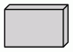 | box |  |
|
| cds | circle | 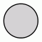 | component | ||
| cylinder |  |
diamond |  |
doublecircle |  |
| doubleoctagon | 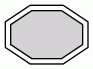 | egg |  |
ellipse |  |
| fivepoverhang |  |
folder |  |
hexagon |  |
| house |  |
insulator | 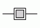 | invhouse | 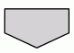 |
| invtrapezium | 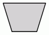 | invtriangle |  |
larrow |  |
| lpromoter |  |
Mcricle | Mdiamond |  |
|
| Msquare | 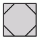 | none |  |
note | |
| noverhang |  |
octagon | oval |  |
|
| parallelogram |  |
pentagon | 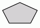 | plain |  |
| plaintext |  |
point |  |
polygon |  |
| primersite | promoter | proteasesite |  |
||
| proteinstab |  |
rarrow |  |
rectangle |  |
| rect |  |
restrictionsite | ribosite | 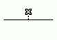 | |
| rnastab | 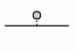 | rpromoter |  |
septagon |  |
| signature |  |
square |  |
star |  |
| tab |  |
terminator | 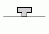 | threepoverhang |  |
| trapezium |  |
triangle | 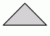 | tripleoctagon | 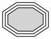 |
| underline |  |
utr |  |
rect和rectangel与box同义. none与plaintext同义, plain不同于前两个, plain强制 width=0 height=0 margin=0 来保证node的大小由label决定. 这对于HTML-like labels很有用. 我们已经展示了为指定style=filled的情况, 如果开启了填充, 标签文字将出现在填充的矩形中.
polygon-based几何形状可以node属性(regular peripheries orientation)来影响, 如果shape="polygon", sides,skew,distortion属性也会其作用, 如果没有设置, 默认值分别为4, 0.0, 0.0. 只有属性peripheries,width,height指定shape point.
通常, node的大小由包含其标签和图像(如果有)以及由margin属性指定的边距所需的最小宽度和高度确定. 宽度和高度还必须至少与width和 height属性指定的大小一样大, 该属性指定这些参数的最小值. 参阅fixedsize属性以了解限制node大小的方法, 如果fixedsize=shape, node的形状将由width和 height属性来固定, 并且该形状用于edge末端, 同时使用和标签大小以防止node重叠. 例如, 下图
digraph G { { node [margin=0 fontcolor=blue fontsize=32 width=0.5 shape=circle style=filled] b [fillcolor=yellow fixedsize=true label="a very long label"] d [fixedsize=shape label="an even longer label"] } a -> {c d} b -> {c d} }

注意, 黄色node的标签(带有fixedsize=true)与node a有重叠, 而灰色node(fixedsize=shape)留有足够的空间.
The shapes: note, tab, folder, box3d and component were provided by Pander. The synthetic biology shapes: promoter, cds, terminator, utr, primersite, restrictionsite, fivepoverhang, threepoverhang, noverhang, assembly, signature, insulator, ribosite, rnastab, proteasesite, proteinstab, rpromoter, rarrow, larrow and lpromoter were contributed by Jenny Cheng.
4.2. 基于记录的Nodes
注意: 请参阅本页顶部有关record-based的node的注释. 另外还要注意, 如果相同rank的一个或两个node都具有record形状, 并且之间使用non-trivial的edges(带有port或者labels的edge)会有问题.
由“record”和“ Mrecord”来指定此类形状, 基于record-based node的结构由其label决定, 形式如下:
- rlabel = field ( '|' field )*
- where field = fieldId or '{' rlabel '}'
- and fieldId = [ '<' string '>'] [ string ]
如果要用括号,竖线和尖括号显示为文字字符, 则必须使用反斜杠转义, 空格被解释为标记之间的分隔符, 因此, 如果要在文本中使用空格, 必须将其转义.
fieldId字段中的第一个字符串指定portname, 与node名称结合使用来指定edge的连接位置. (参阅portPos). 第二个字符串用作field的文本. 它支持常用的转义序列\n, \l和\r.
看上去record是box, 其字段由水平或垂直框表示. Mrecord的形状与record的形状相同, 但其最外面的box有圆角, 通过在括号“ {…}”中嵌套字段，可以在水平和垂直布局之间进行翻转. record中top-level是水平方向. 因此, 带有标签“ A | B | C | D”的record将具有从左到右的4个字段, 而“ {A | B | C | D}”将具有从上到下的字段，而“ A | {B | C} | D”将呈现为: “C”上有“B”, “B”和“C”的左侧是“A”, 右侧是“D”.
record node的初始方向取决于rankdir属性. 如果此属性是TB(默认)或BT, 则对应于垂直布局, 则record中的top-level字段将水平显示. 但是, 如果此属性为LR或RL, 则对应于水平布局, 则垂直显示顶级字段.
示例:
digraph structs { node [shape=record]; //rankdir=LR struct1 [label="<f0> left|<f1> mid\ dle|<f2> right"]; //struct1 [label="<f0> left|<f1> mid\ dle|<f2> right"; shape=Mrecord]; struct2 [label="<f0> one|<f1> two"]; struct3 [label="hello\nworld |{ b |{c|<here> d|e}| f}| g | h"]; struct1:f1 -> struct2:f0; struct1:f2 -> struct3:here; }
如果添加 rankdir=LR, 则会变为以下布局.

如果将 struct1 的shape为 Mrecord, 则会变为以下形状:

4.3. Node的样式
style属性可用于修改node的外观, 目前, 有8个样式值: filled, invisible, diagonals, rounded, dashed, dotted, solid和bold. 通常, style属性的值可以是一个逗号分隔的列表. 如果样式包含冲突(例如style="dotted, solid"), 则使用最后一个属性.
- filled
此值表示应填充node. 使用fillcolor用作node的颜色, 对于不填充的node, 其的内部对于当前图形或cluster背景颜色是透明的, 注意, point形状总是填充的.
digraph G { rankdir=LR node [shape=box, color=blue] node1 [style=filled] node2 [style=filled, fillcolor=red] node0 -> node1 -> node2 }


- invisible
- 设置此样式将导致根本不显示node, 注意, 该node仍用于布置图形.
- diagonals
- 对角线样式会导致在节点多边形的顶点附近绘制小弦, 如果是圆形和椭圆, 则在形状的顶部和底部附近绘制两个弦. 特殊结点形状 Msquare, Mcircle和 Mdiamond 仅仅是设置了对角线样式的普通正方形, 圆形和菱形.
- rounded
圆角样式使多边形角变平滑, 注意, 此样式也适用于record-based的node, 实际上, Mrecord形状只是设置此样式的简写, 此外, 在2005年4月26日之前, 圆形和实心样式是互斥的.
rounded示例:
digraph R { rankdir=LR node [style=rounded] node1 [shape=box] node2 [fillcolor=yellow, style="rounded,filled", shape=diamond] node3 [shape=record, label="{ a | b | c }"] node1 -> node2 -> node3 }


- dashed
- node的边框被绘制为虚线
- dotted
- node的边框被绘制为虚线
- solid
- 此样式使node的边框绘制为实线，这是默认设置
- bold
- 这种样式使node的边框绘制为粗线, 另请参见penwidth.
4.4. 类HTML的标签
如果将labe属性的值(label用于node, edge, clusters, and graphs, and the headlabel and taillabel attributes of an edge) 指定为 HTML字符串, 即以<…> 而不是"…"分隔, 则将标签解释为HTML描述. 简单来说, 这样的标签可以描述普通字符串标签所提供的多行使用不同对齐的文本. 更一般地, 标签可以指定一个类似于HTML提供的表的表, 在每个级别上具有不同的图形属性.
由于HTML字符串的处理方式与HTML输入类似, 因此在文字文本或属性值中使用“, &, <和>字符时, 都必须用相应的转义序列代替. 例如, 如果要href值中使用&, 则应表示为 &
注意: 这些标签支持的功能和语法以HTML为模型. 但是, 有许多与Graphviz标签相关的方面不在HTML中, 相反, HTML允许许多构造,但在Graphviz中无意义. 我们通常将这些标签称为“HTML标签”, 而不是“类似HTML的标签”, 但请注意, 这些标签并不是真正的HTML. 下面的语法精确地描述了Graphviz将接受的内容.
尽管严格来讲HTML标签不是形状, 但可以将它们看作上述redord形状的概括. 特别是, 如果node将其shape属性设置为none或plaintext, 则HTML标签将是该node的形状. 另一方面, 如果node具有其他形状(除point), 则HTML标签将以与普通标签相同的方式嵌入node. 不建议将HTML标签添加到record-based的形状(record和Mrecord), 因为它们的标签架构冲突且功能重叠, 可能会导致意外行为.
以下是HTML标签的抽象语法. 对应于元素的终端以粗体显示, 非终端以斜体显示。方括号[和]包含可选项目. 竖条|单独的选择. 请注意, 就像在HTML中一样, 元素和属性名称不区分大小写. (请参阅HTML 4.01规范的3.2.1和3.2.2节).
label:text
|fonttable
text:textitem
|text textitem
textitem:string
|<BR/>
|<FONT> text </FONT>
|<I> text </I>
|<B> text </B>
|<U> text </U>
|<O> text </O>
|<SUB> text </SUB>
|<SUP> text </SUP>
|<S> text </S>
fonttable:table
|<FONT> table </FONT>
|<I> table </I>
|<B> table </B>
|<U> table </U>
|<O> table </O>
table:<TABLE> rows </TABLE>
rows:row
|rows row
|rows <HR/> row
row:<TR> cells </TR>
cells:cell
|cells cell
|cells <VR/> cell
cell:<TD> label </TD>
|<TD> <IMG/> </TD>
所有不可打印字符(如制表符或换行符)都将被忽略. 上面的字符串是任何可打印字符的集合, 包括空格. 对于在<TD>元素主体之外的表, 将忽略空白字符, 包括空格; 在<TD>元素中, 保留了空格, 但所有其他空白字符均被丢弃. 注意: 由于技术原因, 如果将表包装在诸如<FONT>或<B>之类的字体元素中, 则紧接在此之前或之后的任何空格都会导致语法错误. 例如, 标签 < <U><TABLE><TR><TD>a</TD></TR></U>> 是不合法的, 删除空格或<U> … </U>将解决此问题.
HTML字符串中允许使用HTML注释. 只要它们包含HTML元素的一部分, 则它们必须包含整个元素, 它们可以出现在任何地方.
从以上描述可以明显看出, 空白字符的解释是类似HTML的标签与标准HTML截然不同. 在HTML中, 任何空格字符序列都折叠为一个空格, 如果用户不希望这种情况发生, 则输入必须使用不间断空格 “ ”. 这在HTML中是有意义的, 在HTML中, 文本布局动态取决于可用空间. 在Graphviz中, 布局是由输入静态确定的，因此将普通空格字符视为不可间断是合理的.此外, 忽略选项卡和换行符可对输入文本进行格式化, 以便于阅读.
每个HTML元素都有一组可选属性. 属性值必须用双引号引起来.
<!-- Table element --> <TABLE ALIGN="CENTER|LEFT|RIGHT" BGCOLOR="color" BORDER="value" CELLBORDER="value" CELLPADDING="value" CELLSPACING="value" COLOR="color" COLUMNS="value" FIXEDSIZE="FALSE|TRUE" GRADIENTANGLE="value" HEIGHT="value" HREF="value" ID="value" PORT="portName" ROWS="value" SIDES="value" STYLE="value" TARGET="value" TITLE="value" TOOLTIP="value" VALIGN="MIDDLE|BOTTOM|TOP" WIDTH="value" > <!-- Table row --> <TR <!-- No attributes --> > <!-- Table cell --> <TD ALIGN="CENTER|LEFT|RIGHT|TEXT" BALIGN="CENTER|LEFT|RIGHT" BGCOLOR="color" BORDER="value" CELLPADDING="value" CELLSPACING="value" COLOR="color" COLSPAN="value" FIXEDSIZE="FALSE|TRUE" GRADIENTANGLE="value" HEIGHT="value" HREF="value" ID="value" PORT="portName" ROWSPAN="value" SIDES="value" STYLE="value" TARGET="value" TITLE="value" TOOLTIP="value" VALIGN="MIDDLE|BOTTOM|TOP" WIDTH="value" > <!-- Font specification --> <FONT COLOR="color" FACE="fontname" POINT-SIZE="value" > <!-- Line break --> <BR ALIGN="CENTER|LEFT|RIGHT" /> <!-- Image inclusion --> <IMG SCALE="FALSE|TRUE|WIDTH|HEIGHT|BOTH" SRC="value" /> <!-- Italic style --> <I <!-- No attributes --> > <!-- Bold style --> <B <!-- No attributes --> > <!-- Underline text --> <U <!-- No attributes --> > <!-- Overline text --> <O <!-- No attributes --> > <!-- Subscript text --> <SUB <!-- No attributes --> > <!-- Superscript text --> <SUP <!-- No attributes --> > <!-- Strike-through text --> <S <!-- No attributes --> > <!-- Horizontal rule --> <HR <!-- No attributes --> /> <!-- Vertical rule --> <VR <!-- No attributes --> />
- ALIGN
指定水平放置, 当为对象需要分配更多空间, 此值将确定在该对象的左侧和右侧放置额外空间.
- CENTER aligns the object in the center. (Default)
- LEFT aligns the object on the left.
- RIGHT aligns the object on the right.
- (<TD> only) TEXT aligns lines of text using the full cell width. The alignment of a line is determined by its (possibly implicit) associated <BR> element.
单元格的内容通常按块对齐, 具体而言, 首先基于最宽行和相应的<BR>元素将文本行作为文本块对齐.然后, 将整个文本块在一个单元格内对齐, 但是, 如果单元格的ALIGN值为"TEXT", 并且该单元格包含文本行, 则使用单元格的整个可用宽度来对齐这些行. 如果单元格不包含文本, 则所包含的图像或表格将居中.
- BALIGN
- 指定单元格中<BR>元素的默认对齐方式. 也就是说, 如果<BR>元素没有指定ALIGN属性, 则该属性值由BALIGN的值指定.
- BGCOLOR="color"
- 设置背景的颜色. 此颜色可以由后面的BGCOLOR属性覆盖. 该值可以是单色, 也可以是由冒号分隔的两种颜色, 冒号表示渐变填充.
- BORDER="value"
- 指定对象周围边框的宽度. 零值表示无边框. 默认值为1,最大值为255. 如果在表中设置, 且未设置CELLBORDER, 则该值还将用于表中的所有单元格. 可以被单元格中的BORDER标记覆盖.
- CELLBORDER="value"
- 指定表格中所有单元格的边框宽度.可以被单元格中的BORDER标记覆盖.最大值为255.
- CELLPADDING="value"
- 指定单元格边框与其内容之间的间隔,默认值为2. 最大值为255.
- CELLSPACING="value"
- 指定表格中单元格之间以及单元格与表格边界之间的间隔, 默认值为2. 最大值为127.
- COLOR="color"
- 在<FONT>… </FONT>的范围内设置字体的颜色, 或在<TABLE>…</TABLE>或<TD>… </TD>的范围内设置表格或单元格的边框颜色. 此颜色可以由后续的COLOR属性覆盖. 默认情况下, 字体颜色由相应node, edge或graph的fontcolor属性确定, 而边框颜色由相应node, edge或graph的color属性确定 .
- COLSPAN="value"
- 指定单元格跨越的列数.默认值为1.最大值为65535
- COLUMNS="value"
- 提供有关列的常规格式信息. 当前, 唯一合法的值是“*”, 这将导致在每行的每个单元格之间出现垂直规则.
- FACE="fontname"
- 指定在<FONT>…</FONT>范围内使用的字体. 可以通过后续的FACE属性覆盖此属性. 默认情况下, 字体名称由相应node,edge或图形的fontname属性确定.
- FIXEDSIZE
- 是否强制指定WIDTH和HEIGHT属性值.
- FALSE允许对象增长, 以便适应其所有内容. (默认)
- TRUE将对象大小固定为其给定的WIDTH 和HEIGHT. 这两个属性都必须提供.
- GRADIENTANGLE="value"
- 如果BGCOLOR是颜色列表, 则给出在渐变填充中使用的角度, 对于默认的线性渐变, 这指定了一条线穿过中心的角度, 颜色沿该角度进行变换. 因此, 角度为0将导致从左到右的进行. 对于径向渐变(请参见STYLE). 该角度指定了着色中心的位置, 角度为0时, 将中心置于表格或单元格的中心, 一个非零角度将填充中心沿该角度放置在边界附近.
- HEIGHT="value"
- 指定对象的最小高度. 高度包括内容, 任何间距和边框. 除非FIXEDSIZE为true, 否则高度将扩大以适应内容, 最大值为65535
- HREF="value"
- 将URL附加到对象. 注意, 类似于 URL属性, 将"value"视为 escString
- ID="value"
- 允许用户为表或单元格指定唯一的ID
- POINT-SIZE="value"
- 设置在<FONT>…</FONT>范围内使用的字体大小. 可以通过后续的POINT-SIZE属性将其覆盖. 默认情况下, 字体大小由相应node, edge或graph的fontsize属性确定.
- PORT="value"
- 将portname名附加到对象. (请参阅portPos) 这可用于修改edge的头或尾, 以便末端直接连接到对象.
- ROWS="value"
- 提供有关行的常规格式设置信息. 目前, 唯一合法的值是"\*", 这会导致在每行之间出现水平线.
- ROWSPAN="value"
- 指定单元格跨越的行数. 默认值为1. 最大值为65535
- SCALE
指定图像如何使用其单元格中任何可用的额外空间. 允许值为:
- FALSE : 保持图像自然大小. (Default)
- TRUE : 均匀缩放图像以适应
- WIDTH : 扩大图像宽度以填充
- HEIGHT : 扩大图像高度以填充
- BOTH : 扩展图像宽度高度以填充
如果未定义此属性, 则图像会继承绘制的图形对象的imagescale属性. 与imagescale 属性一样, 如果像元具有固定的大小并且图像太大, 则将缩小尺寸以适合空间, 如果SCALE = "true", 则等比例缩放. 注意, 包含在单元格的ALIGN 和VALIGN属性将覆盖图像的SCALE属性.
- SIDES="value"
- 指定应绘制单元格或表格中边框的哪些边(如果已绘制边框). 默认情况下, 绘制所有侧面. 该"value" 字符串可包含(不区分大小写)的字符集'L', 'T', 'R', 或者'B',中的字符, 分别对应于左, 上, 右, 下. 例如, SIDES="LB"将指示仅应绘制边框的左侧和底部.
- SRC="value"
- 指定要在单元格中显示的图像文件. 请注意, 如果将该软件用作Web服务器, 则文件系统对图像的访问将受到更多限制. 请参阅GV_FILE_PATH 和SERVER_NAME
- STYLE
指定表或单元格的样式特征, 样式特征以逗号或空格分隔的style属性列表的形式给出. 目前, 唯一合法的属性值: table是 “ROUNDED”和“RADIAL”, 单元格是“RADIAL”. 如果指定“ ROUNDED”, 则table将具有圆角. 如果最外面的单元格没有边界, 或者它们的CELLSPACING足够大时效果最好. 如果希望在单元格周围有边框, 使用HR和VR元素, 对于TABLE则使用COLUMNS和ROWS属性.
"RADIAL"属性指示径向渐变填充. 请参见BGCOLOR和 GRADIENTANGLE属性
- TARGET="value"
- 如果对象具有URL, 则将浏览器的哪个窗口用于URL.
- TITLE="value"
- 设置附加到元素的工具提示注释. 仅当元素具有HREF属性时才使用此属性. 注意, 类似于tooltip属性, 将"value"视为 escString
- TOOLTIP="value"
- 是TITLE的别名
- VALIGN
- 指定垂直放置. 当为对象分配的空间超出要求时, 此值将确定在对象上方和下方放置额外空间.
- MIDDLE将对象对准中心 (默认)
- 底部将对象在底部对齐
- TOP将对象在顶部对齐
- WIDTH="value"
指定对象的最小宽度, 宽度包括内容, 任何间距和边框. 除非FIXEDSIZE为true, 否则宽度将扩大以适应内容. 最大值为65535
这些属性之间有一些继承. 如果表指定了CELLPADDING, CELLBORDER或BORDER, 则该值将由表的单元格使用, 除非被覆盖. 如果单元格或表指定BGCOLOR, 则它将为其所有后代的背景色. 当然, 如果为拥有标签的图形对象指定了背景色或填充色, 则这将是标签的原始背景. 对象的fontname, fontcolor和fontsize属性是图形文本的默认属性. 这些可以通过使用FONT设置新值来覆盖. 新字体值将一直保留, 直到被带有的FONT元素覆盖为止. 最后, 图形对象的pencolor或color将用作边框颜色.
如果要在表中统一使用水平或垂直规则, 请考虑使用COLUMNS或ROWS属性, 而不要使用过多HR和VR元素.
使用设备无关的方式处理表时有一些限制, 当BORDER为1且表边界和单元格边界均处于打开状态且CELLSPACING小于2时, 输出中可能会出现异常. 例如边界之间的间隙应为邻接甚至共线的, 用户通常可以通过增加边框大小或间距或关闭表格边框来解决此问题.
以HTML标签为例，点输入
digraph structs { node [shape=plaintext] struct1 [label=< <TABLE BORDER="0" CELLBORDER="1" CELLSPACING="0"> <TR><TD>left</TD><TD PORT="f1">mid dle</TD><TD PORT="f2">right</TD></TR> </TABLE>>]; struct2 [label=< <TABLE BORDER="0" CELLBORDER="1" CELLSPACING="0"> <TR><TD PORT="f0">one</TD><TD>two</TD></TR> </TABLE>>]; struct3 [label=< <TABLE BORDER="0" CELLBORDER="1" CELLSPACING="0" CELLPADDING="4"> <TR> <TD ROWSPAN="3">hello<BR/>world</TD> <TD COLSPAN="3">b</TD> <TD ROWSPAN="3">g</TD> <TD ROWSPAN="3">h</TD> </TR> <TR> <TD>c</TD><TD PORT="here">d</TD><TD>e</TD> </TR> <TR> <TD COLSPAN="3">f</TD> </TR> </TABLE>>]; struct1:f1 -> struct2:f0; struct1:f2 -> struct3:here; }


与往常一样，HTML规范更为冗长. 另一方面, HTML标签更为通用, 如以下示例所示
上图的源码:
digraph G { rankdir=LR node [shape=plaintext] a [ label=< <TABLE BORDER="0" CELLBORDER="1" CELLSPACING="0"> <TR><TD ROWSPAN="3" BGCOLOR="yellow">class</TD></TR> <TR><TD PORT="here" BGCOLOR="lightblue">qualifier</TD></TR> </TABLE>> ] b [shape=ellipse style=filled label=< <TABLE BGCOLOR="bisque"> <TR><TD COLSPAN="3">elephant</TD> <TD ROWSPAN="2" BGCOLOR="chartreuse" VALIGN="bottom" ALIGN="right">two</TD> </TR> <TR><TD COLSPAN="2" ROWSPAN="2"> <TABLE BGCOLOR="grey"> <TR> <TD>corn</TD> </TR> <TR> <TD BGCOLOR="yellow">c</TD> </TR> <TR> <TD>f</TD> </TR> </TABLE> </TD> <TD BGCOLOR="white">penguin</TD> </TR> <TR> <TD COLSPAN="2" BORDER="4" ALIGN="right" PORT="there">4</TD> </TR> </TABLE>> ] c [ label=<long line 1<BR/>line 2<BR ALIGN="LEFT"/>line 3<BR ALIGN="RIGHT"/>> ] subgraph { rank=same b c } a:here -> b:there [dir=both arrowtail = diamond] c -> b d [shape=triangle] d -> c [label=< <TABLE> <TR><TD BGCOLOR="red" WIDTH="10"> </TD> <TD>Edge labels<BR/>also</TD> <TD BGCOLOR="blue" WIDTH="10"> </TD> </TR> </TABLE>> ] }
使用<FONT>元素的示例:

使用 <IMG> 元素的示例:
sides属性(2.37版及更高版本)允许组合多个单元以形成各种非凸形状. 例如, 一个tee-shaped node
tee [shape=none margin=0 label=
<<table border="0" cellspacing="0" cellborder="1">
<tr>
<td width="9" height="9" fixedsize="true" style="invis"></td>
<td width="9" height="9" fixedsize="true" sides="ltr"></td>
<td width="9" height="9" fixedsize="true" style="invis"></td>
</tr>
<tr>
<td width="9" height="9" fixedsize="true" sides="tlb"></td>
<td width="9" height="9" fixedsize="true" sides="b"></td>
<td width="9" height="9" fixedsize="true" sides="brt"></td>
</tr>
</table>>]

4.4.1. 用户自定义Node
用户指定了第三种类型的节点形状, 通常, 这些形状取决于具体图形格式的细节, 目前, 可以使用PostScript通过文件或附加库来描述形状, 以用于PostScript输出, 或者可以通过位图图像文件指定形状以用于SVG或位图(jpeg, gif等)输出. 有关更多信息, 请参见如何创建自定义形状页面.
4.4.2. SDL Shapes for PostScript
由CSR的Mark Rison提供的用户定义的节点形状的示例: SDL形状. 这些可用作PostScript函数, 其用法在外部PostScript过程中进行了描述. 可以在contrib/sdlshapes的release版本目录中找到的PostScript库文件和示例用法. 请注意库文件中包含的版权和许可声明sdl.ps.
下表列出了形状名称和相应的节点形状:
5. 箭头形状
Arrow shapes can be specified and named using the following simple grammar. Terminals are shown in bold font and nonterminals in italics. Literal characters are given in single quotes. Square brackets [ and ] enclose optional items. Vertical bars | separate alternatives.
arrowname: aname [ aname [ aname [ aname ] ] ]
aname: [ modifiers ] shape
modifiers: [ 'o' ] [ side ]
side: 'l'
| 'r'
shape: box
| crow
| curve
| icurve
| diamond
| dot
| inv
| none
| normal
| tee
| vee
The primitive shapes are:
| box |  |
crow |  |
curve |  |
diamond |  |
| dot |  |
icurve | inv |  |
none |  |
|
| normal | tee |  |
vee |  |
对于修饰符:
- 'l'
- 剪切形状，仅将部分保留在边缘的左侧
- 'r'
- 剪切形状，仅将部分保留在边缘的右侧
- 'o'
- 使用开放（未填充）的形状
左和右定义为由从edge到箭头接触node的点的方向. 例如, 箭头形状lteeoldiamond被解析为'l' 'tee' 'o' 'l' 'diamond'.
请注意, 指定的第一个箭头形状最接近该node. 如果指定了后续箭头形状, 则该箭头的形状离node更远. 另外, none使用空间的形状也是如此, 例如, 箭头nonenormal与normal相同.
并非所有修饰语的语法合法组合都是有意义的或在语义上有效的. 例如, 没有任何修饰符对none有意义. 下表指示了哪些形状允许使用哪些修饰符
| Modifier | box | crow | curve | diamond | dot | icurve | inv | none | normal | tee | vee |
|---|---|---|---|---|---|---|---|---|---|---|---|
| 'l'/'r' | X | X | X | X | X | X | X | X | |||
| 'o' | X | X | X | X | X |
这将产生42种不同的箭头形状. 可选的第二, 第三, 第四形状可以是42个形状中的任意一个, 但最后一个形状不能为none,因为这会产生多余的形状. 因此, 有41·42 3 + 41·42 2 + 41·42 + 42 = 3,111,696个不同的组合.
以下显示包含单个箭头形状的42种组合. 箭头所附加的node未绘制,但将出现在边缘的右侧.
box  lbox
lbox  rbox
rbox  obox olbox
obox olbox  orbox
orbox 
crow 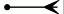 lcrow rcrow 
diamond ldiamond rdiamond  odiamond oldiamond ordiamond
odiamond oldiamond ordiamond 
dot  odot
odot
inv  linv
linv  rinv
rinv  oinv olinv
oinv olinv  orinv
orinv 
none 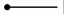
normal  lnormal
lnormal  rnormal onormal olnormal
rnormal onormal olnormal  ornormal
ornormal 
tee  ltee rtee
ltee rtee 
vee  lvee rvee
lvee rvee
curve lcurve rcurve  icurve
icurve  licurve
licurve  ricurve
ricurve
6. 颜色
6.1. X11配色方案
6.2. SVG配色方案
7. 总结整理
7.1. 图表类型
- 无向图 graph
graph G { a -- b; b -- c; c -- d; e -- {c d}; }

- 有向图 digraph
digraph G { a -> b; }

- 子图 subgraph
子图必需以 cluster 字符串开头进行声明.
digraph G { a -> b; b -> c; subgraph cluster_test { d -> e; } }

7.2. 图表属性
7.3. node属性
| 名称 | 缺省值 | 值 |
|---|---|---|
| bgcolor | -- | 画图的背景图 |
| center | false | 在page的中心画图 |
| clusterrank | local | global或none |
| color | black | 对cluster,outline颜色等等的没有指定fillcolor时的默认颜色 |
| comment | -- | 注释 |
| compound | false | 允许cluster之间的边缘 |
| concentrate | false | 允许边缘的集中 |
| fillcolor | black | cluster的填充色 |
| fontcolor | black | 字体颜色 |
| fontname | Times-Roman | 字体族 |
| fontpath | -- | 字体搜索路径 |
| fontsize | 14 | 字体大小 |
| label | -- | 任意字符串 |
| labeljust | centered | l和r用于cluster标签的左对齐和右对齐 |
| labelloc | top | t和b用于cluster标签的上对齐和下对齐 |
| layers | -- | id:id:id… |
| margin | .5 | page的空白，英寸 |
| mclimit | 1.0 | mincross的跌带比例因子 |
| nodesep | .25 | 结点之间的间隔，英寸 |
| nslimit | -- | 如果设置了f，则使用网络界限迭代f(结点数)来设置x坐标 |
| nslimit1 | -- | 如果设置了f，则使用网络界限迭代f(结点数)设置结点排名(rank) |
| ordering | -- | 如果out则外部边缘顺序会保留 |
| orientation | portrait | 如果没用rotate，而值为landscape，使用风景画定位 |
| page | -- | 标记页，例如"8.5,11" |
| pagedir | BL | 多页之间的横断 |
| quantum | -- | 结点标签的尺寸根据quantum的量度 |
| rank | -- | same,min,max,source,sink |
| rankdir | TB | LR(从左向右)或TB(从上到下) |
| ranksep | .75 | 等级之间的间隔，英寸 |
| ratio | -- | 近似朝向approximate aspect ratio desired，fill或auto |
| remincross | -- | 如果为true且有多个集群，重新运行crossing最小化 |
| rotate | -- | 如果为90，设置朝向 |
| samplepoints | 8 | 输出时用以表现椭圆和圆所用的点数，参见附录C |
| searchsize | 30 | 切除的最大边缘，当用以寻找网络中的最小一个(完全没看懂?) |
| size | -- | 最大绘图尺寸，英寸 |
| style | -- | 图形选项，例如集群的filled |
| URL | -- | 图形锚点，依赖于格式 |
7.4. edge属性
| 名称 | 缺省值 | 值 |
|---|---|---|
| arrowhead | normal | 箭头的样式 |
| arrowsize | 1.0 | 箭头的比例因子 |
| arrowtail | normal | 箭头尾部的样式 |
| color | black | 边缘的颜色 |
| comment | -- | 任意字符串，依赖于格式 |
| constraint | true | 强制约束，通过边缘限制结点范围 |
| decorate | -- | 修饰，如果设置了，会画线连接标签到其他边缘 |
| dir | forward | forward,back,both,none |
| fontcolor | black | 字体颜色 |
| fontname | Times-Roman | 字体族 |
| headlabel | -- | 箭头标签 |
| headport | -- | n,ne,e,se,s,sw,w,nw |
| headURL | -- | 如果输出格式为ismap时，标签附上URL |
| label | -- | 边缘标签 |
| labelangle | -25.0 | 边缘标签的旋转角度 |
| labeldistance | 1.0 | 边缘标签距离结点的比例因子 |
| labelfloat | false | 边缘标签位置的强制约束 |
| labelfontcolor | black | 标签字体颜色 |
| labelfontname | Times-Roman | 标签字体族 |
| labelfontsize | 14 | 标签字体大小 |
| layer | overlay range | all,id,或id:id |
| lhead | -- | 箭头使用的簇(cluster)的名字 |
| ltail | -- | 箭尾使用的簇(cluster)的名字 |
| minlen | 1 | 头尾间最小长度 |
| samehead | -- | 头结点的tag，拥有相同头结点tag的边缘会使用统一端点 |
| sametail | -- | 同上，尾结点 |
| style | -- | 图形选项，例如bold,dotted,filled |
| taillabel | -- | 箭尾标签 |
| tailport | -- | n,ne,e,se,s,sw,w,nw |
| tailURL | -- | 当输出格式为ismap时箭尾标签附加的URL |
| weight | 1 | 边缘的延伸花费整数 |
7.5. 方向说明
| 方向 | 说明 |
|---|---|
| n | north 北 |
| ne | north east 东北 |
| e | east 东 |
| se | south east 东南 |
| s | south 南 |
| sw | south west 西南 |
| w | west 西 |
| nw | north west 西北 |
| c | center 中部 |
| _ | 任意 |
digraph action { //layout = dot; //默认布局方式，主要用于有向图 //layout=neato; // 基于spring-model(又称force-based)算法 //layout=twopi; // 径向布局 //layout=circo; // 圆环布局 //layout=fdp; // 用于无向图 //shape 设置node形状 node [shape = record] //style 设置edge的样式 //edge [style=dashed]; node0 [label = "<head> head|<body> body|<foot> foot"] node2 [shape = box, label="mind"] node0:head:n -> node2:n [label = "n"] node0:head:ne -> node2:ne [label = "ne"] node0:head:e -> node2:e [label = "e"] node0:head:se -> node2:se [label = "se"] node0:head:s -> node2:s [label = "s"] node0:head:sw -> node2:sw [label = "sw"] node0:head:w -> node2:w [label = "w"] node0:head:nw -> node2:nw [label = "nw"] node0:head:c -> node2:c [label = "c"] node0:head:_ -> node2:_ [label = "_"] node0:body[style=filled color=lightblue] }

7.6. 形状
main [lable = "mail lable", shape = "box"];
8. 方向
9. 图的属性
调节各个结点、边缘的布局是比较常见的操作，这些都可以通过属性来描述。属性就是键值对。
digraph G { size="4,4"; main [shape=box]; /*注释*/ main -> parse [weight=8]; parse -> execute; main -> init [style=dotted]; main -> cleanup; execute -> {make_string; printf} init -> make_string; edge [color=red]; main -> printf [style=bold,label="100 times"]; make_string [label="make a\nstring"]; node [shape=box, style=filled, color=".7 .3 1.0"]; execute -> compare; }

结点和边缘属性在方括号中设置。在第三行，结点main指定形状为box。第四行的边缘则使用之前并增加宽度(weight)。第六行的边缘则绘制成了点线。第八行使得边缘分别指向了两个目标。第十行设置缺省的边缘颜色为红色。这些设置会自动影响后面创建的边缘。第十一行设置边缘为粗体并设置标签。第十二行，结点make_string使用了多行标签。第十三行改变了缺省结点为box形状，并使用蓝色填充。结点compare继承了这些值。
结点形状可以归于两大类：多边形和记录。除了 record 和 Mrecord 以外都可以归于多边形，并且可以用有限的边和几何属性来定义。这其中的一些属性可以在图表中定义，如果 regular=true ，则结点会强制为规则图形。参数 peripheries 设置需要绘制的边界曲线数量。例如，一个双圆(doublecircle?)的peripheries=2 。而 orientation 属性指定多边形的曲线方向和角度。
有一种方法可以自定义结点形状，使用 shape=epsf 和 shapefile 属性并以来PostScript输出。细节参考本手册其他部分。
形状 polygon 可以指定所有多边形参数，适用于创建自定义形状。附加参数如 regular 、 peripheries 和 orientation 等等，还有数字化参数 sides 、 skew 、distortion 。 skew 是一个-1.0到1.0之间的浮点数，指从上到下的倾斜度。比如，可以用 skew 把一个矩形转换成平行四边形。 distortion 用于从上到下缩短多边形，负数表示增加。可以用于把矩形变成梯形。例如:
digraph G { a->b->c; b->d; a[shape=polygon,sides=5,peripheries=3,color=lightblue,style=filled]; c[shape=polygon,sides=4,skew=.4,label="hello world"]; d[shape=invtriangle]; e[shape=polygon,sides=4,distortion=.7]; }

基于记录的结点使用其他结点类。这包括 record 和 Mrecord 。他们俩除了后面那个拥有圆角以外，是相同的。他们用于描述递归列表，比如以横向或纵向描绘的多行矩形。递归结构依靠结点的 label 来识别，如下样式:
rlabel -> field('|'field)* field -> boxLabel|''rlabel'' boxLabel -> ['<'string'>'][string] 有如上面写的，竖线符号和尖括号必须使用转义，空格用于区别各个记号，所以用于表示字面意义时也必须转义。 boxLabel 的第一个字符串提供了字段名，用于提供矩形的端口名。第二个字符串用作字段的标签；当然可以包含多行转义的标签。一个例子:
digraph structs { node[shape=record]; struct1[shape=record,label="<f0> left|<f1> mid\ dle|<f2> right"]; struct2[shape=record,label="<f0> one|<f1> two"]; struct3[shape=record,label="hello\nworld |{ b |{c|<here> d|e}| f}| g | h"]; struct1->struct2; struct1->struct3; }

数据结构的可视化 实际开发中，经常要用到的是对复杂数据结构的描述，graphviz提供完善的机制来绘制此类图形。 一个hash表的数据结构 比如一个hash表的内容，可能具有下列结构：
struct st_hash_type { int (*compare) (); int (*hash) (); }; struct st_table_entry { unsigned int hash; char *key; char *record; st_table_entry *next; }; struct st_table { struct st_hash_type *type; int num_bins; /* slot count */ int num_entries; /* total number of entries */ struct st_table_entry **bins; /* slot */ };
绘制hash表的数据结构 从代码上看，由于结构体存在引用关系，不够清晰，如果层次较多，则很难以记住各个结构之间的关系，我们可以通过下图来更清楚的展示：
digraph st2{ fontname = "Verdana"; fontsize = 10; rankdir=TB; node [fontname = "Verdana", fontsize = 10, color="skyblue", shape="record"]; edge [fontname = "Verdana", fontsize = 10, color="crimson", style="solid"]; st_hash_type [label="{<head>st_hash_type|(*compare)|(*hash)}"]; st_table_entry [label="{<head>st_table_entry|hash|key|record|<next>next}"]; st_table [label="{st_table|<type>type|num_bins|num_entries|<bins>bins}"]; st_table:bins -> st_table_entry:head; st_table:type -> st_hash_type:head; st_table_entry:next -> st_table_entry:head [style="dashed", color="forestgreen"]; }

应该注意到，在顶点的形状为”record”的时候，label属性的语法比较奇怪，但是使用起来非常灵活。比如，用竖线”|”隔开的串会在绘制出来的节点中展现为一条分隔符。用”<>”括起来的串称为锚点，当一个节点具有多个锚点的时候，这个特性会非常有用，比如节点st_table的type属性指向st_hash_type，第4个属性指向st_table_entry等，都是通过锚点来实现的。
我们发现，使用默认的dot布局后，绿色的这条边覆盖了数据结构st_table_entry，并不美观，因此可以使用别的布局方式来重新布局，如使用circo算法：  则可以得到更加合理的布局结果。 hash表的实例 另外，这个hash表的一个实例如下：
digraph st{ fontname = "Verdana"; fontsize = 10; rankdir = LR; rotate = 90; node [ shape="record", width=.1, height=.1]; node [fontname = "Verdana", fontsize = 10, color="skyblue", shape="record"]; edge [fontname = "Verdana", fontsize = 10, color="crimson", style="solid"]; node [shape="plaintext"]; st_table [label=< <table border="0" cellborder="1" cellspacing="0" align="left"> <tr> <td>st_table</td> </tr> <tr> <td>num_bins=5</td> </tr> <tr> <td>num_entries=3</td> </tr> <tr> <td port="bins">bins</td> </tr> </table> >]; node [shape="record"]; num_bins [label=" <b1> | <b2> | <b3> | <b4> | <b5> ", height=2]; node[ width=2 ]; entry_1 [label="{<e>st_table_entry|<next>next}"]; entry_2 [label="{<e>st_table_entry|<next>null}"]; entry_3 [label="{<e>st_table_entry|<next>null}"]; st_table:bins -> num_bins:b1; num_bins:b1 -> entry_1:e; entry_1:next -> entry_2:e; num_bins:b3 -> entry_3:e; }

上例中可以看到，节点的label属性支持类似于HTML语言中的TABLE形式的定义，通过行列的数目来定义节点的形状，从而使得节点的组成更加灵活。
软件模块组成图 Apache httpd模块关系  IDPV2后台的模块组成关系
在实际的开发中，随着系统功能的完善，软件整体的结构会越来越复杂，通常开发人员会将软件划分为可理解的多个子模块，各个子模块通过协作，完成各种各样的需求。 下面有个例子，是在IDPV2设计时的一个草稿：  IDP支持层为一个相对独立的子系统，其中包括如数据库管理器，配置信息管理器等模块，另外为了提供更大的灵活性，将很多其他的模块抽取出来作为外部模块，而支持层提供一个模块管理器，来负责加载/卸载这些外部的模块集合。
这些模块间的关系较为复杂，并且有部分模块关系密切，应归类为一个子系统中，上图对应的dot脚本为：
digraph idp_modules{ rankdir = TB; fontname = "Microsoft YaHei"; fontsize = 12; node [ fontname = "Microsoft YaHei", fontsize = 12, shape = "record" ]; edge [ fontname = "Microsoft YaHei", fontsize = 12 ]; subgraph cluster_sl{ label="IDP支持层"; bgcolor="mintcream"; node [shape="Mrecord", color="skyblue", style="filled"]; network_mgr [label="网络管理器"]; log_mgr [label="日志管理器"]; module_mgr [label="模块管理器"]; conf_mgr [label="配置管理器"]; db_mgr [label="数据库管理器"]; }; subgraph cluster_md{ label="可插拔模块集"; bgcolor="lightcyan"; node [color="chartreuse2", style="filled"]; mod_dev [label="开发支持模块"]; mod_dm [label="数据建模模块"]; mod_dp [label="部署发布模块"]; }; mod_dp -> mod_dev [label="依赖..."]; mod_dp -> mod_dm [label="依赖..."]; mod_dp -> module_mgr [label="安装...", color="yellowgreen", arrowhead="none"]; mod_dev -> mod_dm [label="依赖..."]; mod_dev -> module_mgr [label="安装...", color="yellowgreen", arrowhead="none"]; mod_dm -> module_mgr [label="安装...", color="yellowgreen", arrowhead="none"]; } }

状态图 有限自动机示意图  上图是一个简易有限自动机，接受a及a结尾的任意长度的串。其脚本定义如下：
digraph automata_0 { size = "8.5, 11"; fontname = "Microsoft YaHei"; fontsize = 10; node [shape = circle, fontname = "Microsoft YaHei", fontsize = 10]; edge [fontname = "Microsoft YaHei", fontsize = 10]; 0 [ style = filled, color=lightgrey ]; 2 [ shape = doublecircle ]; 0 -> 2 [ label = "a " ]; 0 -> 1 [ label = "other " ]; 1 -> 2 [ label = "a " ]; 1 -> 1 [ label = "other " ]; 2 -> 2 [ label = "a " ]; 2 -> 1 [ label = "other " ]; "Machine: a" [ shape = plaintext ]; }

形状值为plaintext的表示不用绘制边框，仅展示纯文本内容，这个在绘图中，绘制指示性的文本时很有用，如上图中的”Machine: a”。
OSGi中模块的生命周期图 OSGi中，模块具有生命周期，从安装到卸载，可能的状态具有已安装，已就绪，正在启动，已启动，正在停止，已卸载等。如下图所示：
对应的脚本如下:
digraph module_lc{ rankdir=TB; fontname = "Microsoft YaHei"; fontsize = 12; node [fontname = "Microsoft YaHei", fontsize = 12, shape = "Mrecord", color="skyblue", style="filled"]; edge [fontname = "Microsoft YaHei", fontsize = 12, color="darkgreen" ]; installed [label="已安装状态"]; resolved [label="已就绪状态"]; uninstalled [label="已卸载状态"]; starting [label="正在启动"]; active [label="已激活(运行)状态"]; stopping [label="正在停止"]; start [label="", shape="circle", width=0.5, fixedsize=true, style="filled", color="black"]; start -> installed [label="安装"]; installed -> uninstalled [label="卸载"]; installed -> resolved [label="准备"]; installed -> installed [label="更新"]; resolved -> installed [label="更新"]; resolved -> uninstalled [label="卸载"]; resolved -> starting [label="启动"]; starting -> active [label=""]; active -> stopping [label="停止"]; stopping -> resolved [label=""]; }

其他实例 一棵简单的抽象语法树(AST) 表达式 (3+4)*5 在编译时期，会形成一棵语法树，一边在计算时，先计算3+4的值，最后与5相乘。
对应的脚本如下:
digraph ast{ fontname = "Microsoft YaHei"; fontsize = 10; node [shape = circle, fontname = "Microsoft YaHei", fontsize = 10]; edge [fontname = "Microsoft YaHei", fontsize = 10]; node [shape="plaintext"]; mul [label="mul(*)"]; add [label="add(+)"]; add -> 3 add -> 4; mul -> add; mul -> 5; }

简单的UML类图 下面是一简单的UML类图，Dog和Cat都是Animal的子类，Dog和Cat同属一个包，且有可能有联系(0..n)。
脚本：
digraph G{ fontname = "Courier New" fontsize = 10 node [ fontname = "Courier New", fontsize = 10, shape = "record" ]; edge [ fontname = "Courier New", fontsize = 10 ]; Animal [ label = "{Animal |+ name : Stringl+ age : intl|+ die() : voidl}" ]; subgraph clusterAnimalImpl{ bgcolor="yellow" Dog [ label = "{Dog||+ bark() : voidl}" ]; Cat [ label = "{Cat||+ meow() : voidl}" ]; }; edge [ arrowhead = "empty" ]; Dog->Animal; Cat->Animal; Dog->Cat [arrowhead="none", label="0..*"]; } }

状态图
脚本：
digraph finite_state_machine { rankdir = LR; size = "8,5" node [shape = doublecircle]; LR_0 LR_3 LR_4 LR_8; node [shape = circle]; LR_0 -> LR_2 [ label = "SS(B)" ]; LR_0 -> LR_1 [ label = "SS(S)" ]; LR_1 -> LR_3 [ label = "S($end)" ]; LR_2 -> LR_6 [ label = "SS(b)" ]; LR_2 -> LR_5 [ label = "SS(a)" ]; LR_2 -> LR_4 [ label = "S(A)" ]; LR_5 -> LR_7 [ label = "S(b)" ]; LR_5 -> LR_5 [ label = "S(a)" ]; LR_6 -> LR_6 [ label = "S(b)" ]; LR_6 -> LR_5 [ label = "S(a)" ]; LR_7 -> LR_8 [ label = "S(b)" ]; LR_7 -> LR_5 [ label = "S(a)" ]; LR_8 -> LR_6 [ label = "S(b)" ]; LR_8 -> LR_5 [ label = "S(a)" ]; }

digraph G { compound = true // 允许子图间存在边 ranksep = 1 node [shape = record] subgraph cluster_hardware { label = "hardware" color = lightblue CPU Memory } subgraph cluster_kernel { label = "kernel" color = green Init IPC } subgraph cluster_libc { label = "libc" color = yellow glibc } CPU -> Init [lhead = cluster_kernel ltail = cluster_hardware] IPC -> glibc [lhead = cluster_libc ltail = cluster_kernel] }

TCP IP 状态流程图 展示了两个版本，怎么把这些图形节点稍微规范的显示出来
digraph { compound=true fontsize=10 margin="0,0" ranksep = .75 nodesep = .65 node [shape=Mrecord fontname="Inconsolata, Consolas", fontsize=12, penwidth=0.5] edge [fontname="Inconsolata, Consolas", fontsize=10, arrowhead=normal] "TCP/IP State Transition" [shape = "plaintext", fontsize = 16] // now start server state transition "CLOSED" -> "LISTEN" [style = blod, label = "应用：被动打开\n发送：<无>"]; "LISTEN" -> "SENT_REVD" [style = blod, label = "接收：SYN\n发送：SYN,ACK"] "SENT_REVD" -> "ESTABLISHED" [style = blod, label = "接收：ACK\n发送：<无>", weight = 20] "ESTABLISHED" -> "CLOSE_WAIT" [style = blod, label = "接收：FIN\n发送：ACK", weight = 20] subgraph cluster_passive_close { style = dotted margin = 10 passive_close [shape = plaintext, label = "被动关闭", fontsize = 14] "CLOSE_WAIT" -> "LAST_ACK" [style = blod, label = "应用：关闭\n发送：FIN", weight = 10] } "LAST_ACK" -> "CLOSED" [style = blod, label = "接收：ACK\n发送：<无>"] // now start client state transition "CLOSED" -> "SYN_SENT" [style = dashed, label = "应用：主动打开\n发送：SYN"]; "SYN_SENT" -> "ESTABLISHED" [style = dashed, label = "接收：SYN,ACK\n发送：ACK", weight = 25] "SYN_SENT" -> "SENT_REVD" [style = dotted, label = "接收：SYN\n发送：SYN,ACK\n同时打开"] "ESTABLISHED" -> "FIN_WAIT_1" [style = dashed, label = "应用：关闭\n发送：FIN", weight = 20] subgraph cluster_active_close { style = dotted margin = 10 active_open [shape = plaintext, label = "主动关闭", fontsize = 14] "FIN_WAIT_1" -> "FIN_WAIT_2" [style = dashed, label = "接收：ACK\n发送：<无>"] "FIN_WAIT_2" -> "TIME_WAIT" [style = dashed, label = "接收：FIN\n发送：ACK"] "FIN_WAIT_1" -> "CLOSING" [style = dotted, label = "接收：ACK\n发送：<无>"] "FIN_WAIT_1" -> "TIME_WAIT" [style = dotted, label = "接收：SYN,ACK\n发送：ACK"] "CLOSING" -> "TIME_WAIT" [style = dotted] } "TIME_WAIT" -> "CLOSED" [style = dashed, label = "2MSL超时"] }

digraph rankdot { compound=true margin="0,0" ranksep = .75 nodesep = 1 pad = .5 //splines = ortho node [shape=Mrecord, charset = "UTF-8" fontname="Microsoft YaHei", fontsize=14] edge [charset = "UTF-8" fontname="Microsoft YaHei", fontsize=11, arrowhead = normal] CLOSED -> LISTEN [style = dashed, label = "应用：被动打开\n发送：<无>", weight = 100]; "TCP/IP State Transition" [shape = "plaintext", fontsize = 16] { rank = same SYN_RCVD SYN_SENT point_1 [shape = point, width = 0] SYN_SENT -> point_1 [style = dotted, label = "应用关闭或者超时"] // SYN_SENT -> SYN_RCVD 这个一行代码和上一行冲突了，syn_sent 会在syn_rcvd右边 SYN_RCVD -> SYN_SENT [style = dotted, dir = back, headlabel = "接收：SYN\n发送：SYN,ACK\n同时打开"] } LISTEN -> SYN_RCVD [style = dashed, headlabel = "接收：SYN\n发送：SYN,ACK"] SYN_RCVD -> LISTEN [style = dotted, headlabel = "接收：RST"] CLOSED:es -> SYN_SENT [style = blod, label = "应用：主动打开\n发送：SYN"] { rank = same ESTABLISHED CLOSE_WAIT ESTABLISHED -> CLOSE_WAIT [style = dashed, label = "接收：SYN,ACK\n发送：ACK"] } SYN_RCVD -> ESTABLISHED [style = dashed, label = "接收：ACK\n发送：<无>", weight = 9] SYN_SENT -> ESTABLISHED [style = blod, label = "接收：SYN,ACK\n发送：ACK", weight = 10] { rank = same FIN_WAIT_1 CLOSING LAST_ACK point_2 [shape = point, width = 0] FIN_WAIT_1 -> CLOSING [style = dotted, label = "接收：FIN\n发送：ACK"] LAST_ACK -> point_2 [style = dashed, label = "接收：ACK\n发送：<无>"] } CLOSE_WAIT -> LAST_ACK [style = dashed, label = "应用：关闭\n发送：FIN", weight = 10] { rank = same FIN_WAIT_2 TIME_WAIT point_3 [shape = point, width = 0] TIME_WAIT -> point_3 [style = blod, label = "2MSL超时"] } ESTABLISHED -> FIN_WAIT_1 [style = blod, label = "应用：关闭\n发送：FIN"] FIN_WAIT_1 -> FIN_WAIT_2 [style = blod, headlabel = "接收：ACK\n发送：<无>", weight = 15] FIN_WAIT_2 -> TIME_WAIT [style = blod, label = "接收：FIN\n发送：ACK", weight = 10] CLOSING -> TIME_WAIT [style = dotted, label = "接收：ACK\n发送：<无>", weight = 15] FIN_WAIT_1 -> TIME_WAIT [style = dotted, label = "接收：ACK\n发送：<无>"] point_3 -> point_2 [arrowhead = none, style = dotted, weight = 10] point_2 -> point_1 [arrowhead = none, style = dotted] point_1 -> CLOSED [style = dotted] }

这个版本看起来有内味了，最最最的主要的原因就是我使用 rank = same 属性，将一些图形固定在 同一行，一些需要横竖的直线的地方使用 weight 来调整权重，达到横竖的直接的效果，很多地方都是微调的结果。有一个很差的地方是 使用了rank限制若干图形后，就不能使用 subgraph 属性了，这样就不能在若干不同部分的节点周边画线（对比关闭的区域）了。
epoll 相关数据结构及关系
digraph rankdot { compound=true margin="0,0" ranksep = .75 nodesep = 1 pad = .5 rankdir = LR node [shape=record, charset = "UTF-8" fontname="Microsoft YaHei", fontsize=14] edge [style = dashed, charset = "UTF-8" fontname="Microsoft YaHei", fontsize=11] epoll [shape = plaintext, label = "epoll 相关结构及部分关系"] eventpoll [ color = cornflowerblue, label = "<eventpoll> struct \n eventpoll | <lock> spinlock_t lock; | <mutex> struct mutex mtx; | <wq> wait_queue_head_t wq; | <poll_wait> wait_queue_head_t poll_wait; | <rdllist> struct list_head rdllist; | <ovflist> struct epitem *ovflist; | <rbr> struct rb_root_cached rbr; | <ws> struct wakeup_source *ws; | <user> struct user_struct *user; | <file> struct file *file; | <visited> int visited; | <visited_list_link> struct list_head visited_list_link;" ] epitem [ color = sienna, label = "<epitem> struct \n epitem | <rb>struct rb_node rbn;\nstruct rcu_head rcu; | <rdllink> struct list_head rdllink; | <next> struct epitem *next; | <ffd> struct epoll_filefd ffd; | <nwait> int nwait; | <pwqlist> struct list_head pwqlist; | <ep> struct eventpoll *ep; | <fllink> struct list_head fllink; | <ws> struct wakeup_source __rcu *ws; | <event> struct epoll_event event;" ] epitem2 [ color = sienna, label = "<epitem> struct \n epitem | <rb>struct rb_node rbn;\nstruct rcu_head rcu; | <rdllink> struct list_head rdllink; | <next> struct epitem *next; | <ep> struct eventpoll *ep; | ··· | ··· " ] eppoll_entry [ color = darkviolet, label = "<entry> struct \n eppoll_entry | <llink> struct list_head llink; | <base> struct epitem *base; | <wait> wait_queue_entry_t wait; | <whead> wait_queue_head_t *whead;" ] epitem:ep -> eventpoll:se [color = sienna] epitem2:ep -> eventpoll:se [color = sienna] eventpoll:ovflist -> epitem:next -> epitem2:next [color = cornflowerblue] eventpoll:rdllist -> epitem:rdllink -> epitem2:rdllink [dir = both] eppoll_entry:llink -> epitem:pwqlist [color = darkviolet] eppoll_entry:base -> epitem:nw [color = darkviolet] }

https://www.iteye.com/blog/gashero-1748795 https://www.cnblogs.com/CoolJie/archive/2012/07/17/graphviz.html